<title>Layered Human Checkpoint 3</title>
<meta name="claude:viewport-fit-sides" content="cover">
<style>
:root {
  color-scheme: dark;
  --wall: #1d2227; --wall-2: #2a3138; --spot: #3d4750; --mount: #22282e;
  --text: #efece6; --text-2: #c7c6c1; --text-3: #a2a39f;
  --brass: #d4b47e; --brass-2: #e3caa0;
  --line: #3e4851; --line-2: #56626d;
  --slate-wall: #2a3138; --slate-spot: #3d4750; --slate-text: #efece6; --slate-text-2: #c7c6c1; --slate-accent: #d4b47e; --slate-line: #56626d;
  --green-wall: #24302b; --green-spot: #384a42; --green-text: #eef0ea; --green-text-2: #c5cbc3; --green-accent: #d6b67e; --green-line: #53665c;
  --prussian-wall: #1e2637; --prussian-spot: #304060; --prussian-text: #eef0f4; --prussian-text-2: #c4cad6; --prussian-accent: #dcbd8c; --prussian-line: #4c5b78;
  --aubergine-wall: #2d232f; --aubergine-spot: #453748; --aubergine-text: #f2eef1; --aubergine-text-2: #cdc4cb; --aubergine-accent: #dbbf91; --aubergine-line: #5f5262;
  --umber-wall: #2e2823; --umber-spot: #463d35; --umber-text: #f1ede8; --umber-text-2: #cfc7be; --umber-accent: #a9c7d4; --umber-line: #5f554c;
  --charcoal-wall: #222325; --charcoal-spot: #36383b; --charcoal-text: #f0efed; --charcoal-text-2: #c9c8c4; --charcoal-accent: #e0c690; --charcoal-line: #505257;
  --serif: "Literata", Georgia, "Times New Roman", serif;
  --sans: "Fira Sans", "Helvetica Neue", Arial, sans-serif;
}
* { box-sizing: border-box; }
html { background: var(--wall); -webkit-text-size-adjust: 100%; }
body { margin: 0; background: var(--wall); color: var(--text); font: 400 17px/1.6 var(--serif); font-optical-sizing: auto; }
.page { max-width: 1240px; margin: 0 auto; padding-block: 56px 96px;
  padding-left: max(16px, env(safe-area-inset-left, 0px)); padding-right: max(16px, env(safe-area-inset-right, 0px)); }
img { display: block; max-width: 100%; height: auto; }
a { color: var(--brass-2); text-underline-offset: 3px; text-decoration-thickness: 1px; }
a:hover { color: var(--text); }
h1, h2, h3 { font-family: var(--serif); font-weight: 350; letter-spacing: -.01em; margin: 0; }
h1 { font-size: clamp(36px, 6vw, 64px); line-height: 1.05; }
h2 { font-size: clamp(28px, 4vw, 40px); line-height: 1.15; padding-top: 28px; border-top: 1px solid var(--line); }
h3 { font-size: clamp(24px, 3vw, 30px); line-height: 1.2; display: flex; align-items: baseline; gap: 14px; flex-wrap: wrap; }
p { margin: 0; max-width: 64ch; }
.intro { display: grid; gap: 22px; margin-bottom: 72px; }
.intro .sub { font-size: clamp(19px, 2.2vw, 22px); line-height: 1.5; color: var(--text-2); max-width: 46ch; }
ol.asks { margin: 0; padding: 0; list-style: none; display: grid; gap: 8px; counter-reset: a; }
ol.asks li { counter-increment: a; display: flex; gap: 12px; }
ol.asks li::before { content: counter(a); font: 500 14px/1.9 var(--sans); color: var(--brass); width: 18px; flex: none; }
.changed { display: grid; gap: 14px; padding-top: 22px; border-top: 1px solid var(--line); margin-top: 6px; }
.changed p { color: var(--text-2); }
.swatches { list-style: none; margin: 4px 0 0; padding: 0; display: grid; gap: 12px; grid-template-columns: repeat(auto-fill, minmax(170px, 1fr)); }
.sw { border: 1px solid; border-radius: 2px; padding: 14px 14px 12px; display: flex; flex-direction: column; gap: 2px; min-height: 108px; }
.sw-name { font: 400 17px/1.3 var(--serif); }
.sw small { font: 400 12px/1.4 var(--sans); }
.chips { display: flex; gap: 6px; margin-top: auto; padding-top: 10px; }
.chips i { width: 22px; height: 10px; border-radius: 1px; }
.sw-slate { background: var(--slate-wall); color: var(--slate-text); border-color: var(--slate-line); }
.sw-slate .chip-spot { background: var(--slate-spot); } .sw-slate .chip-text { background: var(--slate-text); } .sw-slate .chip-accent { background: var(--slate-accent); } .sw-slate small { color: var(--slate-text-2); }
.sw-green { background: var(--green-wall); color: var(--green-text); border-color: var(--green-line); }
.sw-green .chip-spot { background: var(--green-spot); } .sw-green .chip-text { background: var(--green-text); } .sw-green .chip-accent { background: var(--green-accent); } .sw-green small { color: var(--green-text-2); }
.sw-prussian { background: var(--prussian-wall); color: var(--prussian-text); border-color: var(--prussian-line); }
.sw-prussian .chip-spot { background: var(--prussian-spot); } .sw-prussian .chip-text { background: var(--prussian-text); } .sw-prussian .chip-accent { background: var(--prussian-accent); } .sw-prussian small { color: var(--prussian-text-2); }
.sw-aubergine { background: var(--aubergine-wall); color: var(--aubergine-text); border-color: var(--aubergine-line); }
.sw-aubergine .chip-spot { background: var(--aubergine-spot); } .sw-aubergine .chip-text { background: var(--aubergine-text); } .sw-aubergine .chip-accent { background: var(--aubergine-accent); } .sw-aubergine small { color: var(--aubergine-text-2); }
.sw-umber { background: var(--umber-wall); color: var(--umber-text); border-color: var(--umber-line); }
.sw-umber .chip-spot { background: var(--umber-spot); } .sw-umber .chip-text { background: var(--umber-text); } .sw-umber .chip-accent { background: var(--umber-accent); } .sw-umber small { color: var(--umber-text-2); }
.sw-charcoal { background: var(--charcoal-wall); color: var(--charcoal-text); border-color: var(--charcoal-line); }
.sw-charcoal .chip-spot { background: var(--charcoal-spot); } .sw-charcoal .chip-text { background: var(--charcoal-text); } .sw-charcoal .chip-accent { background: var(--charcoal-accent); } .sw-charcoal small { color: var(--charcoal-text-2); }
section { display: grid; gap: 28px; margin-top: 64px; }
.lede { color: var(--text-2); }
.grid { display: grid; gap: 18px; grid-template-columns: repeat(auto-fill, minmax(230px, 1fr)); }
.grid.glance { grid-template-columns: repeat(auto-fill, minmax(min(100%, 520px), 1fr)); gap: 22px; }
figure { margin: 0; }
figcaption { font: 400 13px/1.45 var(--sans); color: var(--text-3); margin-top: 8px; }
.thumb a { display: block; aspect-ratio: 16 / 10; background: var(--mount); border: 1px solid var(--line); border-radius: 2px; overflow: hidden; }
.thumb a img { width: 100%; height: 100%; object-fit: contain; }
.glance .thumb a { aspect-ratio: 16 / 9; }
.thumb a:hover { border-color: var(--line-2); }
.big a { display: block; border: 1px solid var(--line); border-radius: 2px; overflow: hidden; }
.treat, .opt { display: grid; gap: 18px; padding-top: 36px; border-top: 1px solid var(--line); }
.treat .lede, .opt p { max-width: 64ch; }
.rec { font: 500 13px/1 var(--sans); color: var(--brass); border: 1px solid var(--brass); border-radius: 2px; padding: 5px 7px 4px; transform: translateY(-4px); }
.why { color: var(--text); }
.today { display: grid; gap: 14px; }
h4 { font: 500 15px/1.4 var(--sans); color: var(--text-2); margin: 0; }
ul.notes { margin: 0; padding: 0; list-style: none; display: grid; gap: 10px; max-width: 72ch; }
ul.notes li { padding-left: 18px; position: relative; color: var(--text-2); }
ul.notes li::before { content: ""; position: absolute; left: 0; top: .78em; width: 8px; height: 1px; background: var(--line-2); }
.notes-wrap { display: grid; gap: 12px; padding-top: 24px; border-top: 1px solid var(--line); }
.num { font: 500 15px/1 var(--sans); color: var(--brass); border: 1px solid var(--line-2); border-radius: 50%; width: 32px; height: 32px; display: inline-flex; align-items: center; justify-content: center; transform: translateY(-3px); flex: none; }
.cols { display: grid; gap: 14px 40px; grid-template-columns: repeat(auto-fit, minmax(min(100%, 380px), 1fr)); }
.quiet { color: var(--text-2); font-size: 16px; }
.also { color: var(--text-2); padding-top: 24px; border-top: 1px solid var(--line); }
.answer { display: grid; gap: 18px; }
.reply { font: 400 clamp(22px, 3vw, 28px)/1.3 var(--serif); font-style: italic; color: var(--text); padding: 18px 0; border-block: 1px solid var(--line); max-width: none; }
footer { margin-top: 72px; font: 400 13px/1.5 var(--sans); color: var(--text-3); }
@media (max-width: 600px) {
  body { font-size: 16px; }
  .page { padding-block: 36px 64px; }
  section { margin-top: 48px; }
  .grid { gap: 14px; }
  .swatches { grid-template-columns: 1fr; gap: 8px; }
  .sw { display: grid; min-height: 0; grid-template-columns: 1fr auto; align-items: center; padding: 10px 12px; }
  .sw small { grid-column: 1; grid-row: 2; }
  .sw .chips { grid-column: 2; grid-row: 1 / span 2; margin: 0; padding: 0; }
}
.asks.abc li::before { content: counter(a, upper-alpha); }
ul.fixes li { color: var(--text-2); }
.pairs { display: grid; gap: 22px; grid-template-columns: repeat(auto-fill, minmax(min(100%, 520px), 1fr)); }
.grid.tall { grid-template-columns: repeat(auto-fill, minmax(min(100%, 180px), 1fr)); }
.thumb.tall a { aspect-ratio: 3 / 4; }
.thumb.long a { aspect-ratio: 3 / 4; }
.thumb.long a img { object-fit: cover; object-position: top; }
.view { color: var(--text); }
.view b { font-weight: 600; color: var(--brass-2); }
.state { display: grid; gap: 16px; padding-top: 30px; border-top: 1px solid var(--line); }
.grid.five { grid-template-columns: repeat(auto-fill, minmax(min(100%, 180px), 1fr)); }
.state h4 { font: 400 22px/1.3 var(--serif); color: var(--text); }
.big.inline a { display: inline-block; max-width: 100%; }
.thumb.chosen a { border-color: var(--brass); }
.grid.slim { grid-template-columns: repeat(4, minmax(0, 280px)); }
@media (max-width: 600px) { .grid.slim { grid-template-columns: repeat(2, minmax(0, 1fr)); } }
.thumb.slim a { aspect-ratio: 584 / 1648; }
.grid.five.edges { grid-template-columns: repeat(auto-fill, minmax(min(100%, 520px), 1fr)); }
.edges .thumb a { aspect-ratio: 2260 / 520; }
.live { justify-self: start; font: 400 15px/1.5 var(--sans); }
.tasks-wrap { overflow-x: auto; -webkit-overflow-scrolling: touch; }
table.tasks { border-collapse: collapse; width: 100%; min-width: 820px; font: 400 14px/1.45 var(--sans); color: var(--text-2); font-variant-numeric: tabular-nums; }
table.tasks th, table.tasks td { text-align: left; vertical-align: top; padding: 10px 22px 10px 0; border-bottom: 1px solid var(--line); }
table.tasks thead th { font-weight: 500; color: var(--text-3); border-bottom-color: var(--line-2); white-space: nowrap; }
table.tasks td.n { color: var(--text-3); width: 28px; }
table.tasks td.t { font: 400 16px/1.4 var(--serif); color: var(--text); min-width: 220px; }
table.tasks td:last-child, table.tasks th:last-child { padding-right: 0; }
</style>
<link rel="stylesheet" href="https://fonts.googleapis.com/css2?family=Literata:ital,opsz,wght@0,7..72,200..900;1,7..72,200..900&family=Fira+Sans:wght@400;500;600&display=swap">
<main class="page">

<header class="intro">
  <h1>Layered Human<br>Checkpoint 3</h1>
  <p class="sub">Four choices this time: labels, search, navigation and the histology library, each with three options.</p>
  <ol class="asks abc">
    <li><span><a href="#labels">Labels</a>: where &ldquo;Show all&rdquo; lives in your mix of numbered circles and caption rails.</span></li>
    <li><span><a href="#search">Search</a>: how results appear, now that the drawer is gone.</span></li>
    <li><span><a href="#navigation">Navigation</a>: how you move between rooms and always know where you are.</span></li>
    <li><span><a href="#histology">The histology library</a>: your endless catalogue, and two other ways to choose a tissue.</span></li>
  </ol>
  <p class="lede">What was applied from checkpoint 2, and the changes to the website, are <a href="#from-cp2">at the start</a>.</p>
</header>

<section id="from-cp2" aria-labelledby="cp2-h">
  <h2 id="cp2-h">From checkpoint 2</h2>
  <p class="lede">You chose the Rule gauge without its &ldquo;Dissection&rdquo; label and with a smaller knob, Vitrines for Lessons, the Catalogue for Histology, the model viewer kept as it is, search redone without the drawer, and no more &ldquo;Ctrl K&rdquo; on screen. Everything but search is now in the main mockup; search is <a href="#search">question B</a>.</p>
<article class="treat" id="gauge"><h3>The gauge: Rule, without its label</h3><p class="lede">&ldquo;Dissection&rdquo; is gone, and the gauge moved up 29 px, so &ldquo;Superficial&rdquo; lines up with &ldquo;Systems&rdquo; in the left column. The knob&rsquo;s brass dot is now exactly as tall as the figures of &ldquo;26%&rdquo;: 9 px across, in a 1.75 px ring of wall colour that parts it from the rule, down from 21 px. The first pass counted that ring, which is the wall&rsquo;s own colour, so the dot you could see was only 6 px; now the dot itself is the figures&rsquo; height, and its edges land on whole pixels. It keeps an invisible 24 px target, so it is as easy to grab, and the percentage sits 13.5 px from the rule instead of 20. The model viewer&rsquo;s two sliders use the same dot, and so does the website.</p><div class="grid slim"><figure class="thumb slim"><a href="renders/checkpoint-3/apply/gauge_before.webp">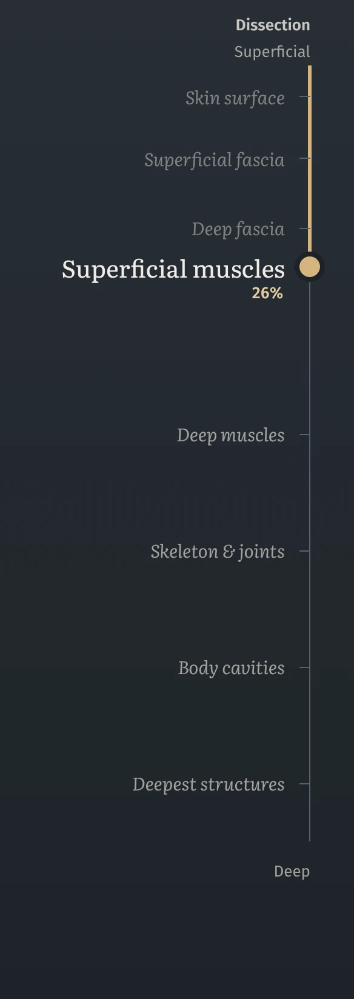</a><figcaption>Atlas, before</figcaption></figure><figure class="thumb slim"><a href="renders/checkpoint-3/knob/gauge_atlas_now.webp">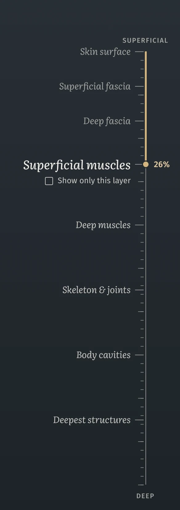</a><figcaption>Atlas, now</figcaption></figure><figure class="thumb slim"><a href="renders/checkpoint-3/apply/peel_gauge_before.webp">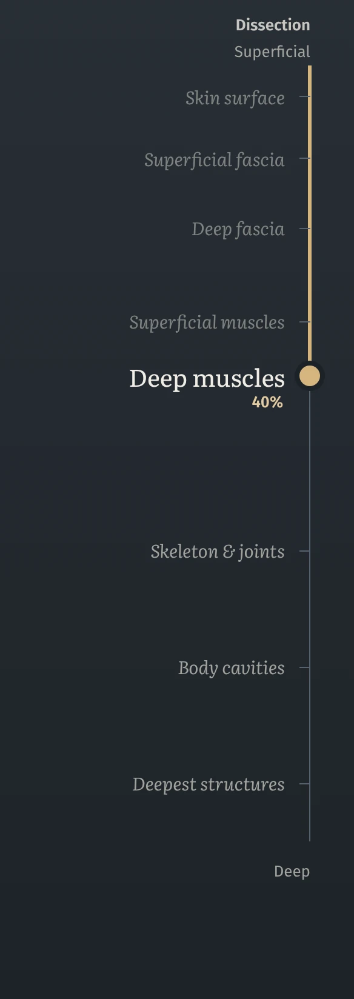</a><figcaption>Peel, before</figcaption></figure><figure class="thumb slim"><a href="renders/checkpoint-3/knob/gauge_peel_now.webp">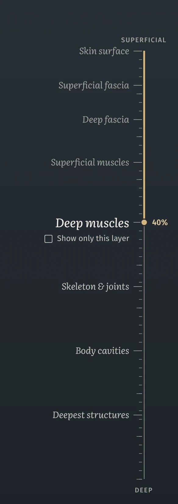</a><figcaption>Peel, now</figcaption></figure></div><div class="grid glance"><figure class="big"><a href="renders/checkpoint-3/knob/knob_gauge_slate_before.webp">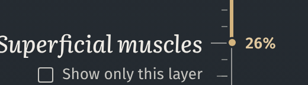</a><figcaption>The knob and &ldquo;26%&rdquo; at 2x, first pass</figcaption></figure><figure class="big"><a href="renders/checkpoint-3/knob/knob_gauge_slate_after.webp">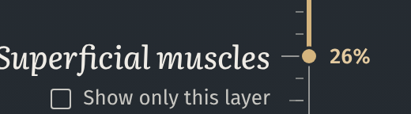</a><figcaption>The knob and &ldquo;26%&rdquo; at 2x, now</figcaption></figure><figure class="big"><a href="renders/checkpoint-3/knob/knob_sliders_before.webp">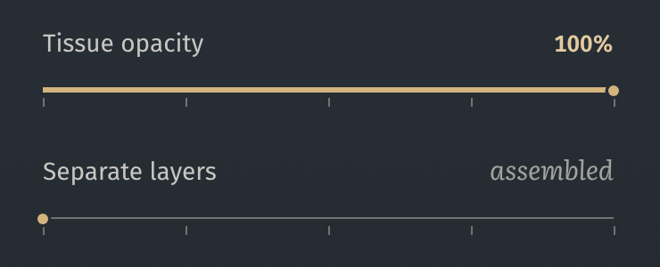</a><figcaption>The viewer&rsquo;s sliders, first pass</figcaption></figure><figure class="big"><a href="renders/checkpoint-3/knob/knob_sliders_after.webp">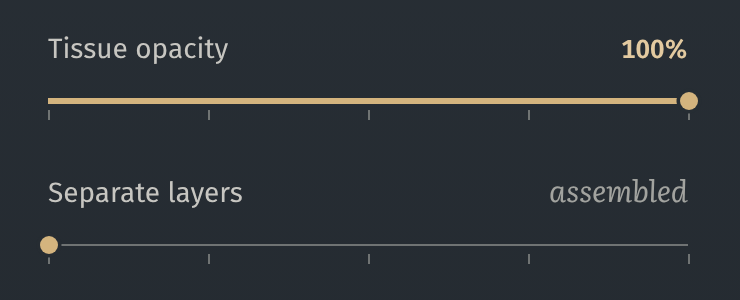</a><figcaption>The viewer&rsquo;s sliders, now</figcaption></figure></div></article>
<article class="treat" id="lessons"><h3>Lessons as Vitrines</h3><p class="lede">Every lab now stands lit on the wall with its caption under it, as in Models. Apart from the header, it matches the option you picked pixel for pixel.</p><div class="grid glance"><figure class="thumb"><a href="renders/checkpoint-2/library/before_lessons.webp">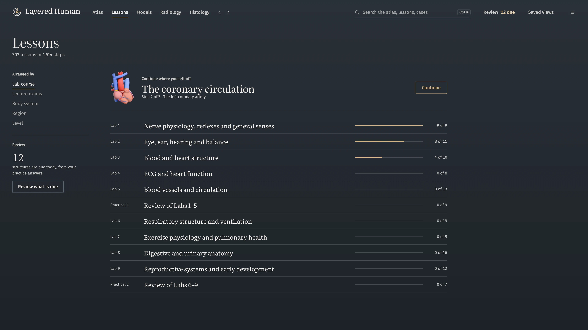</a><figcaption>Before, a list</figcaption></figure><figure class="thumb"><a href="renders/checkpoint-3/apply/lessons.webp">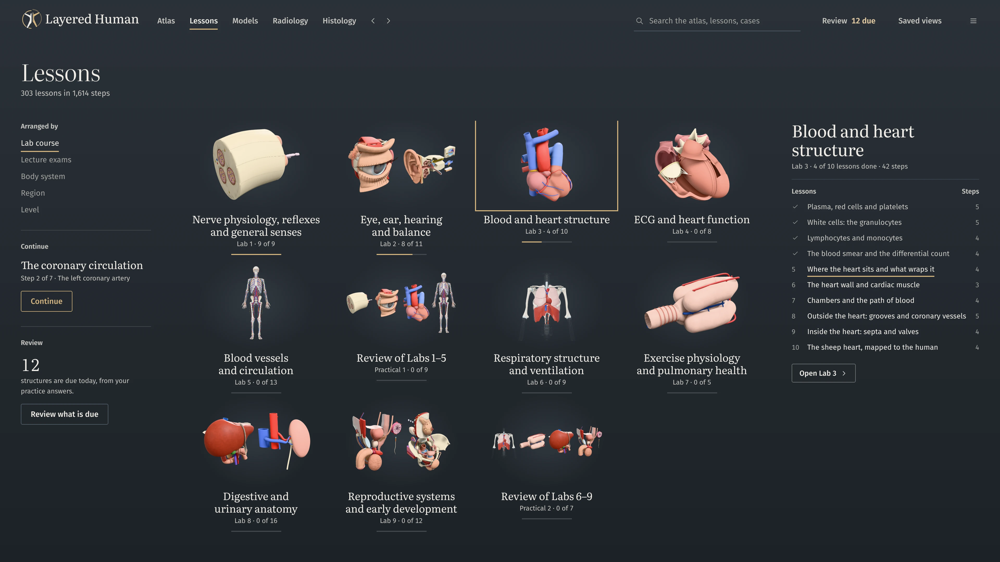</a><figcaption>Now, Vitrines</figcaption></figure></div></article>
<article class="treat" id="hist-cat"><h3>The Histology catalogue, without its foot line</h3><p class="lede">The Catalogue is now the Histology library in the main mockup. The count line at its foot is gone; the list still fades into the wall. Its caption reads &ldquo;101 tissues &middot; 978 micrographs&rdquo;, counted in the app&rsquo;s own catalogue. <a href="#histology">Option D</a> takes it further.</p><div class="grid glance"><figure class="thumb"><a href="renders/checkpoint-2/library/1_histology.webp">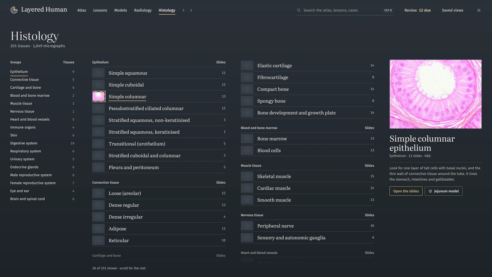</a><figcaption>Checkpoint 2, with the foot line</figcaption></figure><figure class="thumb"><a href="renders/checkpoint-3/apply/histology_library.webp"></a><figcaption>Now, nothing at the foot</figcaption></figure></div></article>
<article class="treat" id="viewer"><h3>The model viewer, now in the main mockup</h3><p class="lede">The viewer room is in the main mockup as you saw it, and the kidney in Models opens into it. The one change: its strip of views no longer prints &ldquo;Keys PgUp PgDn&rdquo;, so it sits centred. The keys still work.</p><div class="grid glance"><figure class="thumb"><a href="renders/checkpoint-3/apply/viewer.webp">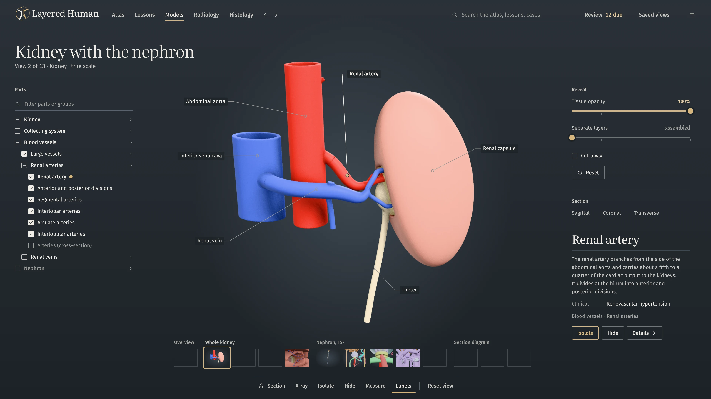</a><figcaption>The kidney, as it opens</figcaption></figure><figure class="thumb"><a href="renders/checkpoint-3/apply/viewer_corpuscle.webp">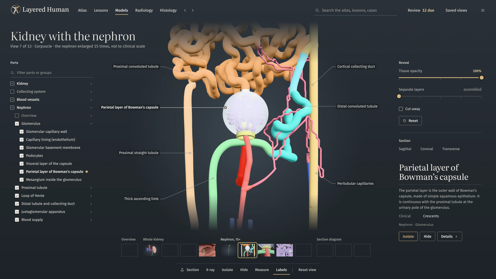</a><figcaption>The corpuscle view</figcaption></figure></div></article>
<article class="treat" id="search-field"><h3>The search field, without &ldquo;Ctrl K&rdquo;</h3><p class="lede">&ldquo;Ctrl K&rdquo; is gone from every header. The key still opens search, and the tooltip names it. Without the key cap the field is 320 px wide instead of 380, and the peel&rsquo;s &ldquo;Keys [ ]&rdquo; line went for the same reason.</p><div class="pairs"><figure class="big"><a href="renders/checkpoint-3/apply/search_before.webp">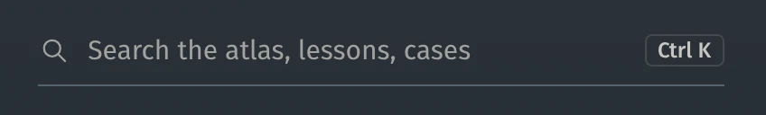</a><figcaption>Before, actual size</figcaption></figure><figure class="big"><a href="renders/checkpoint-3/apply/search_after.webp">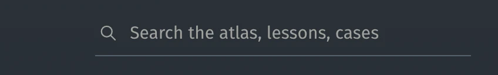</a><figcaption>Now, actual size</figcaption></figure></div></article>
<article class="treat" id="white"><h3>No white panels left</h3><p class="lede">The main mockup was checked in all six walls and 20 states each: every screen, both gauge states, the corpuscle view, the knob and the search field in focus, and two hovers, 120 page loads in all. No light surface was found. Every light thing is a line, an outline, a brass mark or a marker drawn on a film or a micrograph, so nothing needed fixing and there are no before and after pictures.</p></article>
<article class="treat" id="site"><h3>The website</h3><p class="lede">The first screen&rsquo;s gauge now matches the app: no heading, the same small knob (the knob and &ldquo;0%&rdquo; are both 9 px tall), the percentage beside the knob, and &ldquo;Superficial&rdquo; and &ldquo;Deep&rdquo; at the ends. &ldquo;Drag to peel&rdquo; stays as one quiet grey line until the gauge is used, because a phone gives no hover hint.</p><figure class="big"><a href="renders/checkpoint-3/site3/hero_1440.webp">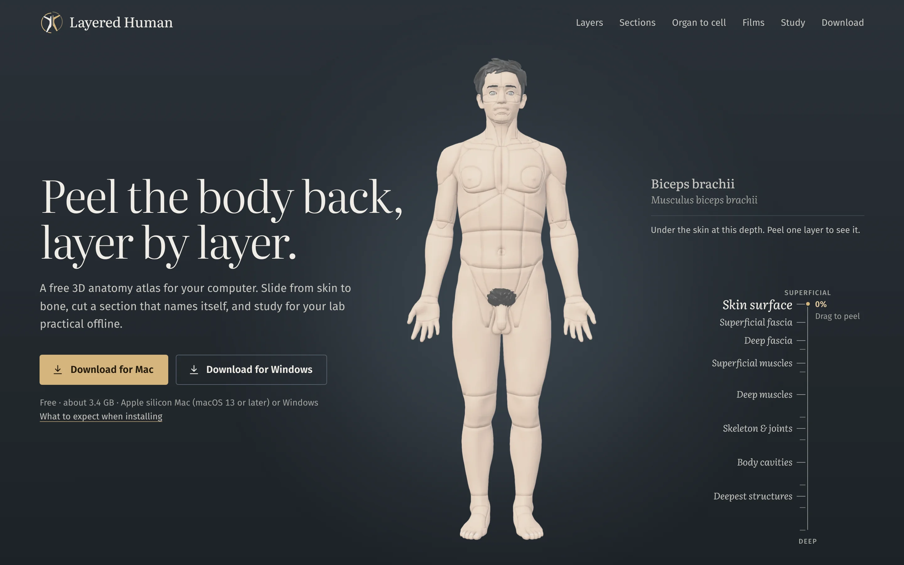</a><figcaption>The first screen at 1440 px</figcaption></figure><p class="lede">On a phone, the body no longer sits on a lighter rectangle. The fade on the legs was clipping the body&rsquo;s own pool of light; now only the pictures fade. The page is also lighter: smaller copies of the images bring a phone&rsquo;s whole page from about 5.4 MB to 4.3 MB, and the headline shows first when images are slow. Two wall labels no longer repeat their own titles.</p><div class="grid tall"><figure class="thumb tall"><a href="renders/checkpoint-3/site/gauge_before.webp">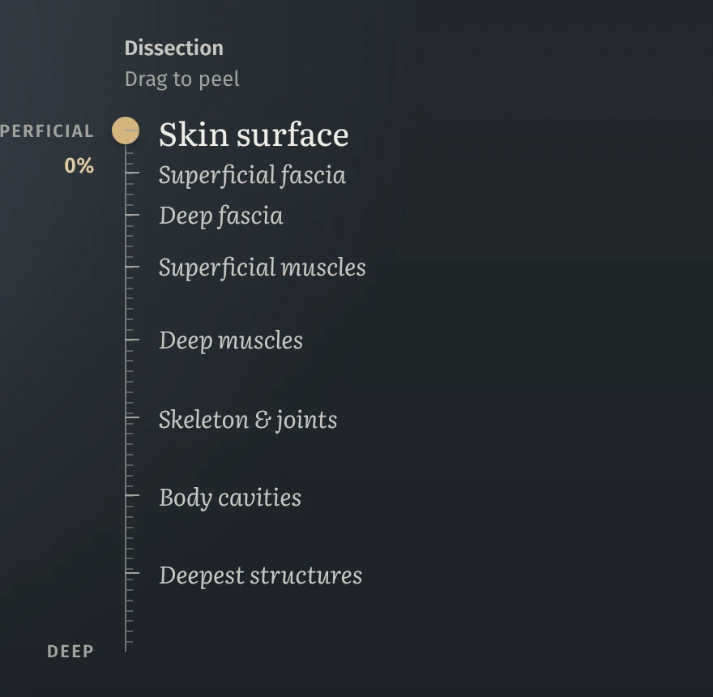</a><figcaption>Gauge, before</figcaption></figure><figure class="thumb tall"><a href="renders/checkpoint-3/site/gauge_after.webp">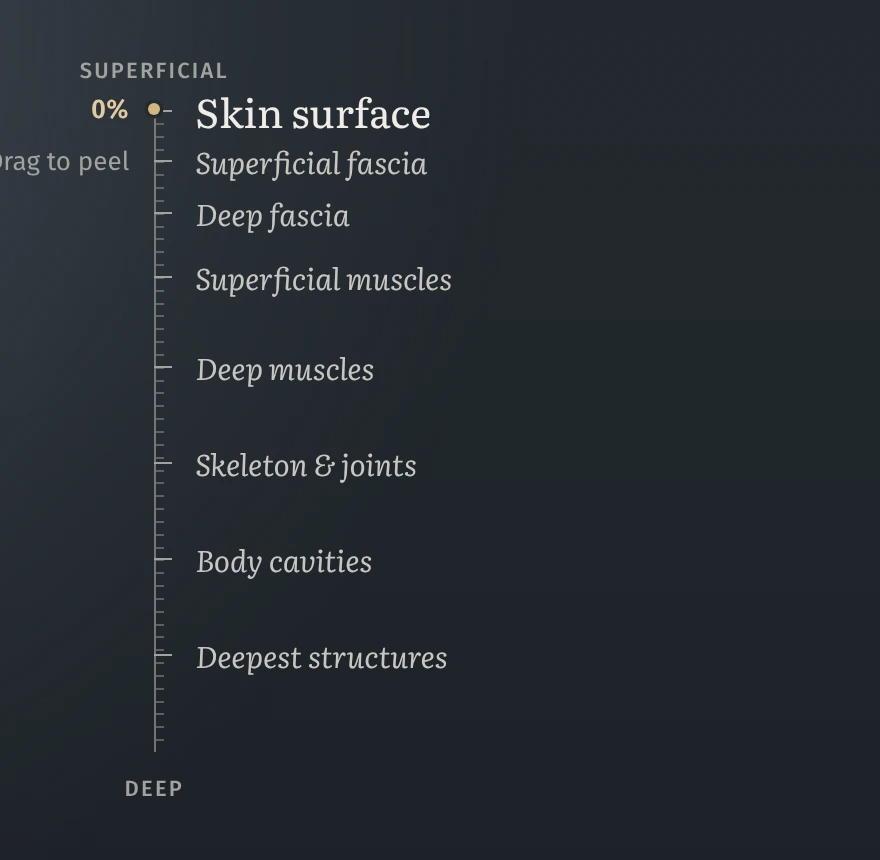</a><figcaption>Gauge, now</figcaption></figure><figure class="thumb tall"><a href="renders/checkpoint-3/site/phone_hero_before.webp"></a><figcaption>Phone, before</figcaption></figure><figure class="thumb tall"><a href="renders/checkpoint-3/site/phone_hero_after.webp">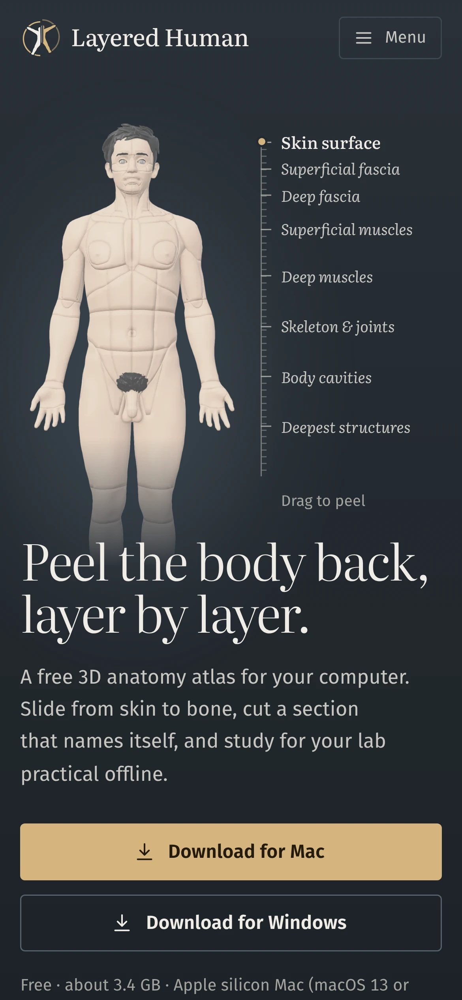</a><figcaption>Phone, now</figcaption></figure></div><p class="lede">On a laptop with a short screen the gauge was squeezed. At 1280 &times; 800 the wall label and the gauge were stacked under the biceps line, so the rule was only 268 px long and the stop names nearly touched. Now, on screens shorter than about 930 px, the label and the gauge rise together, just enough to keep the rule at least 360 px long, and the label still points at the biceps. Taller screens are unchanged. The rule&rsquo;s fine marks were 5 px apart and crowded the stops; now the 10% marks always show, the 2% marks only where they are 12 px apart or more, and no mark sits on or next to a stop.</p><div class="grid"><figure class="thumb"><a href="renders/checkpoint-3/site3/hero_1280x800_before.webp">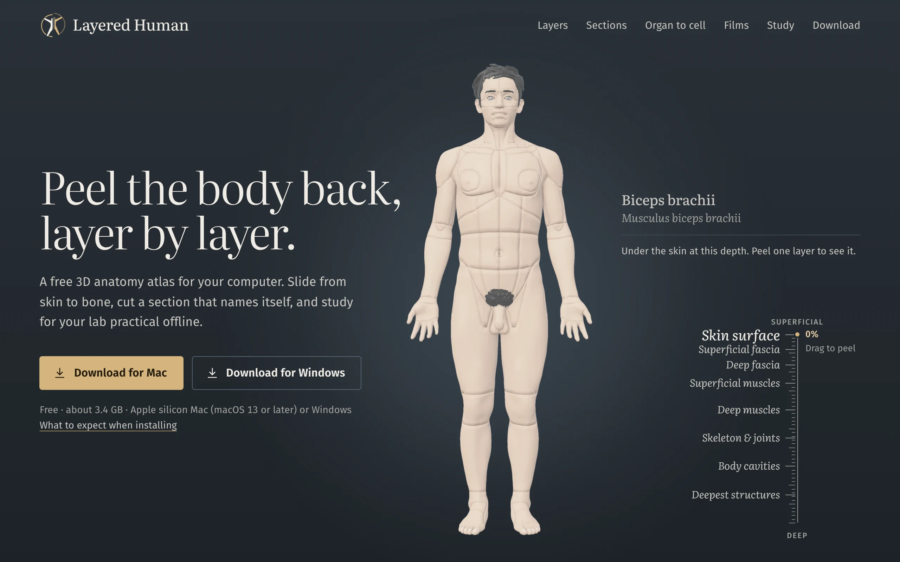</a><figcaption>At 1280 &times; 800, before</figcaption></figure><figure class="thumb"><a href="renders/checkpoint-3/site3/hero_1280x800_after.webp">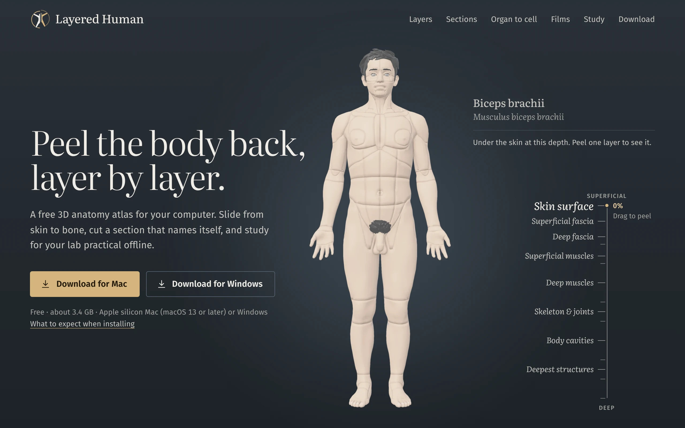</a><figcaption>At 1280 &times; 800, now</figcaption></figure><figure class="thumb"><a href="renders/checkpoint-3/site3/ticks_before.webp">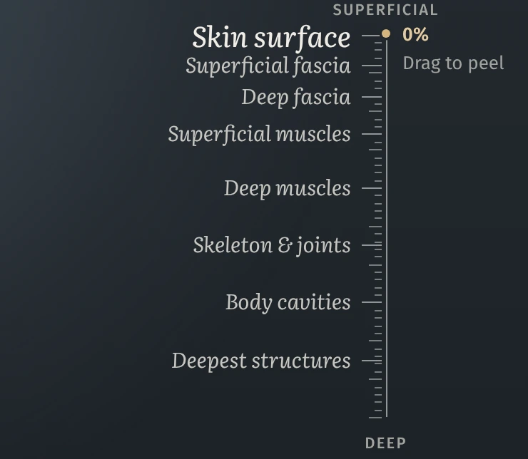</a><figcaption>Fine marks, before</figcaption></figure><figure class="thumb"><a href="renders/checkpoint-3/site3/ticks_after.webp">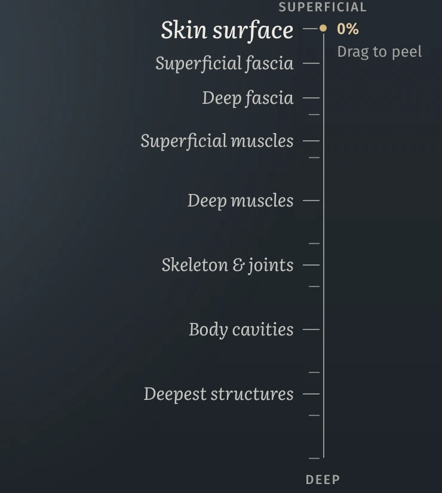</a><figcaption>Fine marks, now</figcaption></figure></div><p class="lede">On a phone, the Study picture showed only the lesson&rsquo;s text column. Now it is two crops of the app&rsquo;s lesson, one above the other: the question, then the heart with its lit artery and three labels.</p><div class="grid tall"><figure class="thumb tall"><a href="renders/checkpoint-3/site3/study_390_before.webp">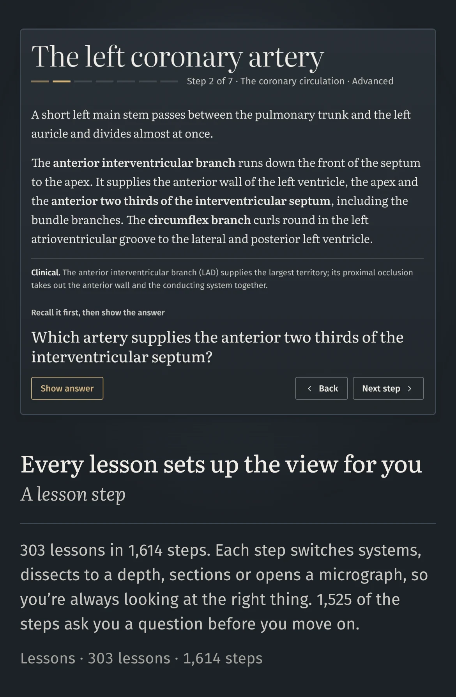</a><figcaption>Study on a phone, before</figcaption></figure><figure class="thumb tall"><a href="renders/checkpoint-3/site3/study_390_after.webp">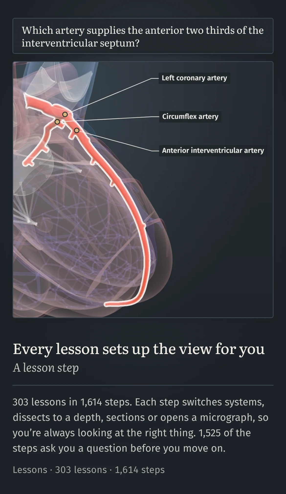</a><figcaption>Study on a phone, now</figcaption></figure></div><div class="grid tall"><figure class="thumb tall"><a href="renders/checkpoint-3/site3/hero_390.webp"></a><figcaption>First screen, 390 px</figcaption></figure><figure class="thumb tall"><a href="renders/checkpoint-3/site/study_1440.webp">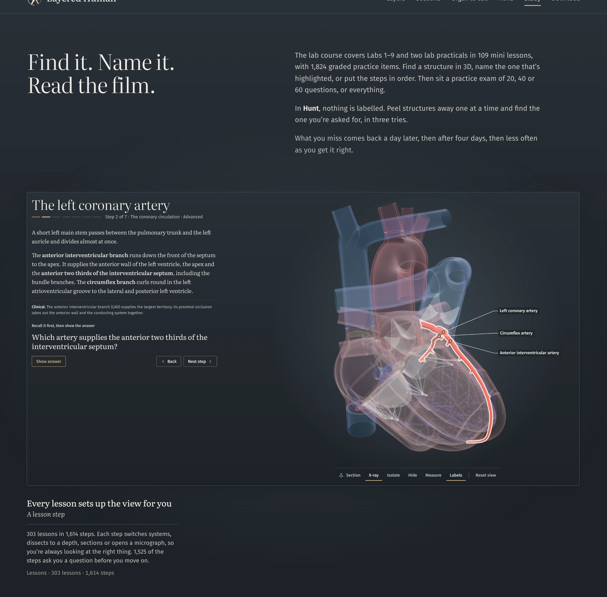</a><figcaption>Study, 1440 px</figcaption></figure><figure class="thumb long"><a href="renders/checkpoint-3/site3/full_1440.webp"></a><figcaption>The whole page, 1440 px</figcaption></figure><figure class="thumb long"><a href="renders/checkpoint-3/site3/full_390.webp"></a><figcaption>The whole page, phone</figcaption></figure></div><p class="quiet">The whole pages show their top; open them for the full length.</p></article>
  <p class="why">Nothing to choose here. Flag anything that looks off.</p>
</section>

<section id="labels" aria-labelledby="labels-h">
  <h2 id="labels-h">A. Labels</h2>
  <p class="lede">Your mix is built into all three: Labels on shows only the numbered circles, a click on a circle opens its caption rail, Show all opens every rail, and the selected structure&rsquo;s rail is open from the start. The options differ only in where Show all lives.</p>
<div class="today"><h4>Before this round</h4><div class="grid"><figure class="thumb"><a href="renders/checkpoint-3/labels/before_atlas.webp"></a><figcaption>The atlas</figcaption></figure><figure class="thumb"><a href="renders/checkpoint-3/labels/before_lesson.webp"></a><figcaption>The lesson</figcaption></figure></div></div>
<article class="opt" id="labels-1"><h3><span class="num">1</span>Dock pair <span class="rec">recommended</span></h3><p>Show all is the second half of the dock&rsquo;s Labels button, there only while Labels is on; one bar runs under both halves, brass under Labels.</p><p class="why">My pick. Show all sits on the Labels button itself, so it is plain what it shows, and the dock is the same in the atlas, a section, a lesson and the viewer.</p><div class="grid glance"><figure class="thumb"><a href="renders/checkpoint-3/labels/1_atlas_circles.webp"></a><figcaption>Atlas, circles and the selected rail</figcaption></figure><figure class="thumb"><a href="renders/checkpoint-3/labels/1_atlas_one.webp">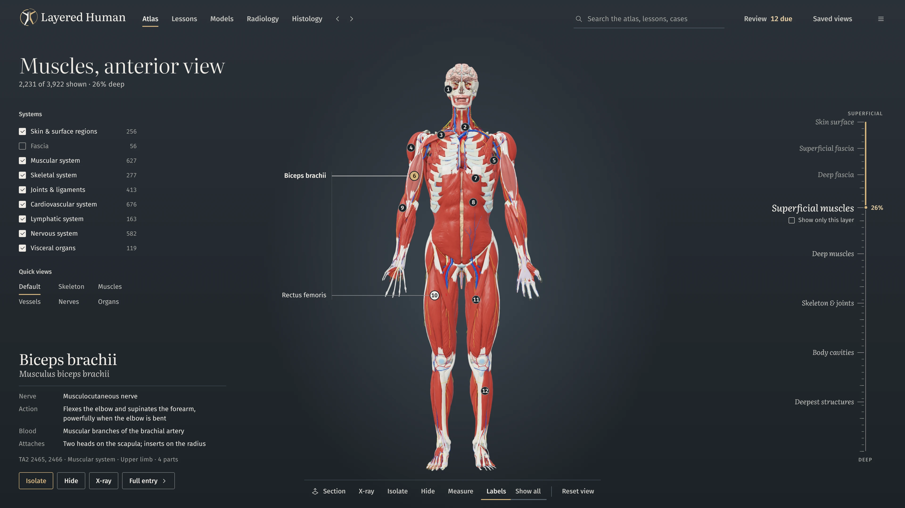</a><figcaption>Atlas, one more rail open</figcaption></figure><figure class="thumb"><a href="renders/checkpoint-3/labels/1_atlas_all.webp">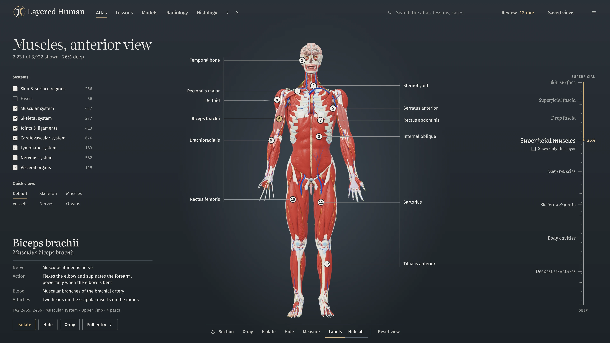</a><figcaption>Atlas, all twelve rails</figcaption></figure></div><div class="grid"><figure class="thumb"><a href="renders/checkpoint-3/labels/1_atlas_one_crop.webp">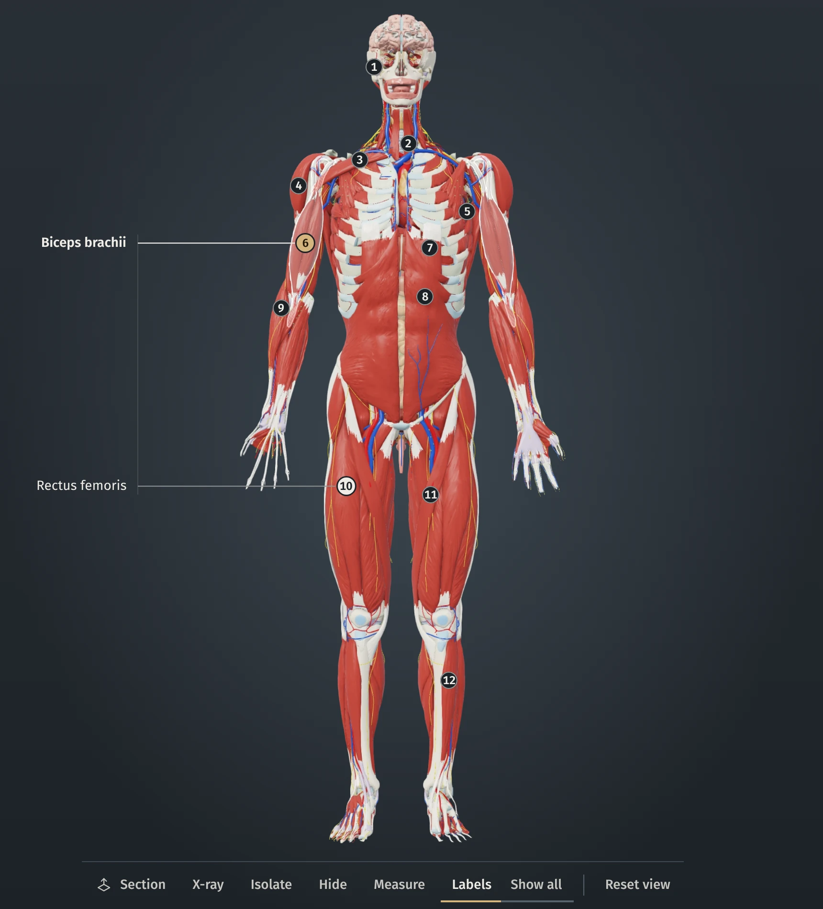</a><figcaption>Two rails, actual size</figcaption></figure><figure class="thumb"><a href="renders/checkpoint-3/labels/1_atlas_all_crop.webp">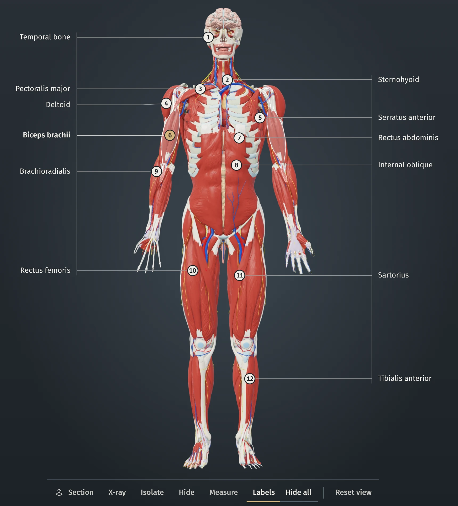</a><figcaption>All twelve, actual size</figcaption></figure><figure class="thumb"><a href="renders/checkpoint-3/labels/1_atlas_hover_crop.webp">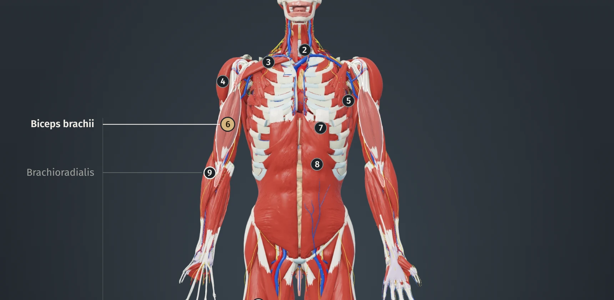</a><figcaption>Hovering a circle, actual size</figcaption></figure><figure class="thumb"><a href="renders/checkpoint-3/labels/1_section_circles.webp"></a><figcaption>Section, circles</figcaption></figure><figure class="thumb"><a href="renders/checkpoint-3/labels/1_section_all.webp">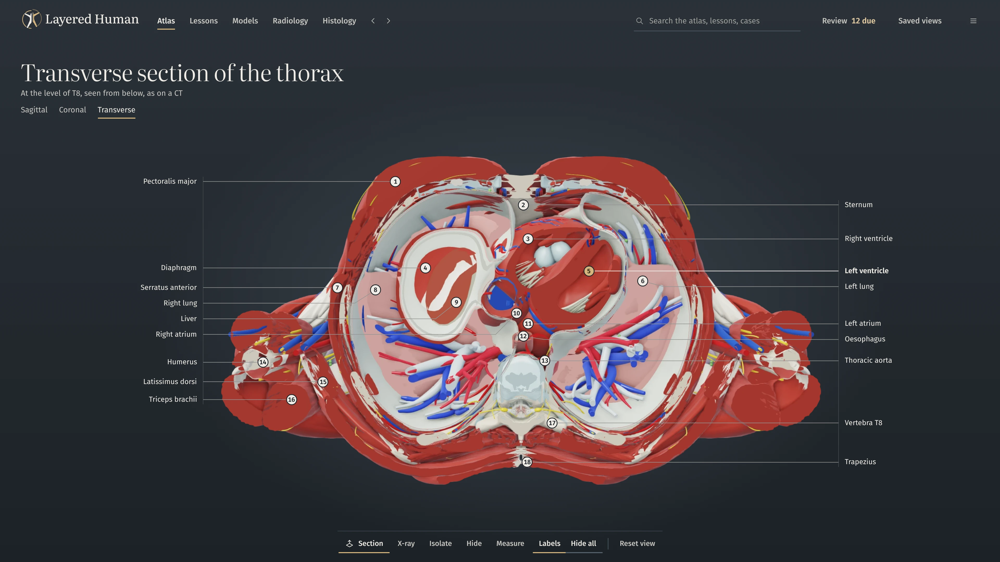</a><figcaption>Section, all eighteen rails</figcaption></figure><figure class="thumb"><a href="renders/checkpoint-3/labels/1_lesson_default.webp"></a><figcaption>Lesson, as it opens</figcaption></figure><figure class="thumb"><a href="renders/checkpoint-3/labels/1_lesson_term.webp"></a><figcaption>Lesson, hovering a term</figcaption></figure><figure class="thumb"><a href="renders/checkpoint-3/labels/1_lesson_all.webp"></a><figcaption>Lesson, all three rails</figcaption></figure><figure class="thumb"><a href="renders/checkpoint-3/labels/1_lesson_all_crop.webp">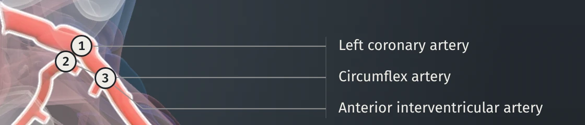</a><figcaption>Lesson rails, actual size</figcaption></figure><figure class="thumb"><a href="renders/checkpoint-3/labels/1_atlas_all_umber.webp"></a><figcaption>In Umber</figcaption></figure></div><p><a class="live" href="app/specimen-labels3/index.html?variant=1&amp;screen=atlas">Open it live</a></p></article>
<article class="opt" id="labels-2"><h3><span class="num">2</span>Wall line</h3><p>The caption line under the title ends &ldquo;&middot; 12 labels &middot; Show all&rdquo; while Labels is on, so nothing moves when it appears.</p><p class="why">The quietest on the wall, but Show all sits in the caption line, far from the circles and the dock.</p><div class="grid glance"><figure class="thumb"><a href="renders/checkpoint-3/labels/2_atlas_circles.webp"></a><figcaption>Atlas, circles and the selected rail</figcaption></figure><figure class="thumb"><a href="renders/checkpoint-3/labels/2_atlas_one.webp">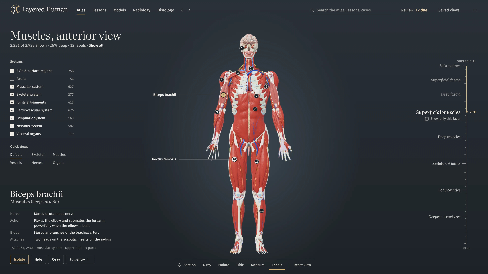</a><figcaption>Atlas, one more rail open</figcaption></figure><figure class="thumb"><a href="renders/checkpoint-3/labels/2_atlas_all.webp">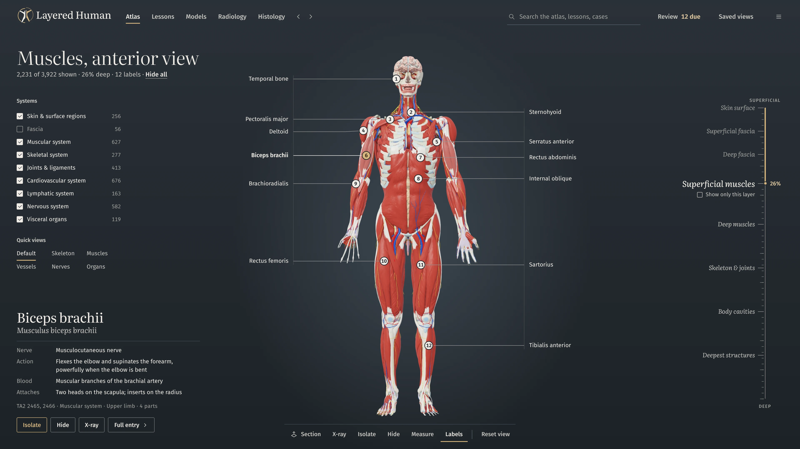</a><figcaption>Atlas, all twelve rails</figcaption></figure></div><div class="grid"><figure class="thumb"><a href="renders/checkpoint-3/labels/2_atlas_one_crop.webp">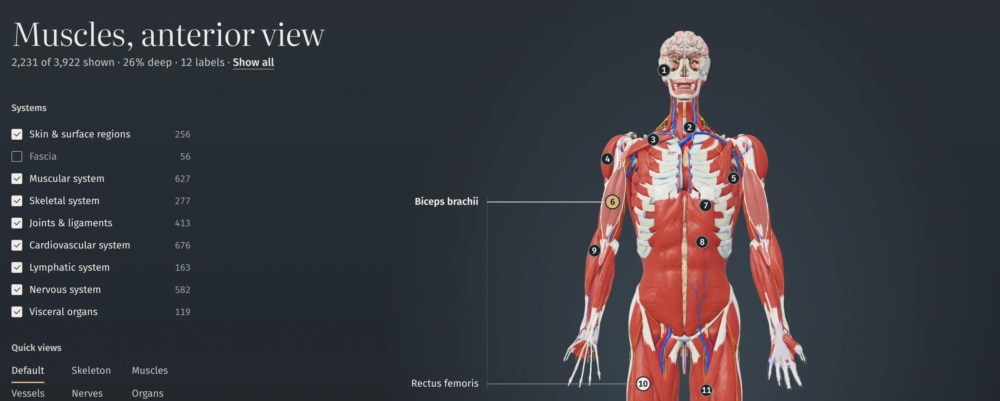</a><figcaption>Two rails, actual size</figcaption></figure><figure class="thumb"><a href="renders/checkpoint-3/labels/2_atlas_all_crop.webp">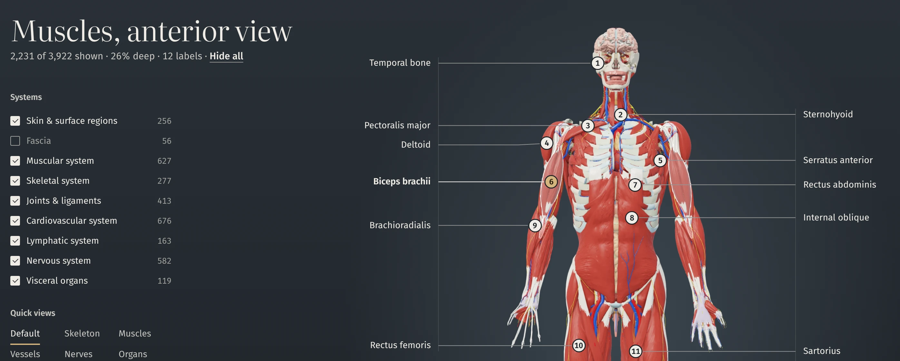</a><figcaption>All twelve, actual size</figcaption></figure><figure class="thumb"><a href="renders/checkpoint-3/labels/2_section_circles.webp">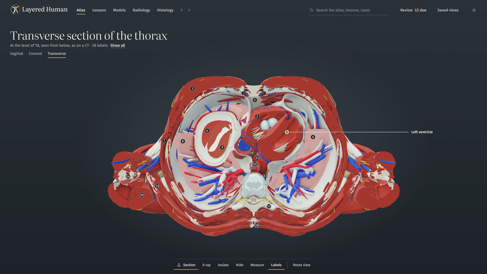</a><figcaption>Section, circles</figcaption></figure><figure class="thumb"><a href="renders/checkpoint-3/labels/2_section_all.webp"></a><figcaption>Section, all eighteen rails</figcaption></figure><figure class="thumb"><a href="renders/checkpoint-3/labels/2_lesson_default.webp"></a><figcaption>Lesson, as it opens</figcaption></figure><figure class="thumb"><a href="renders/checkpoint-3/labels/2_lesson_term.webp"></a><figcaption>Lesson, hovering a term</figcaption></figure><figure class="thumb"><a href="renders/checkpoint-3/labels/2_lesson_all.webp">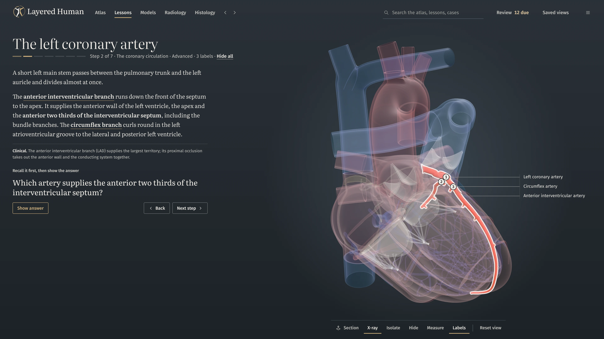</a><figcaption>Lesson, all three rails</figcaption></figure><figure class="thumb"><a href="renders/checkpoint-3/labels/2_atlas_all_umber.webp">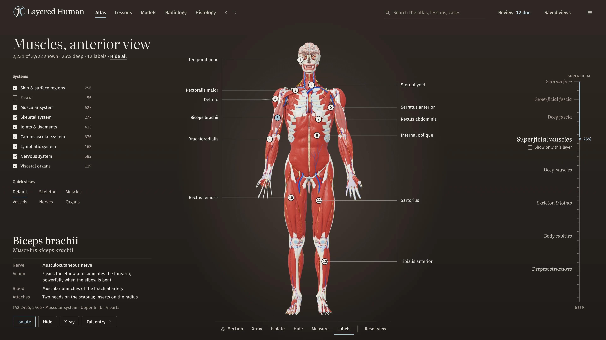</a><figcaption>In Umber</figcaption></figure></div><p><a class="live" href="app/specimen-labels3/index.html?variant=2&amp;screen=atlas">Open it live</a></p></article>
<article class="opt" id="labels-3"><h3><span class="num">3</span>Corner key</h3><p>A compact numbered key sits in the top right corner, level with the title, headed &ldquo;Labels&ensp;Show all&rdquo;; a name in the key opens its rail, just like its circle.</p><p class="why">Well placed in the corner, but it brings back the list of names your idea removed.</p><div class="grid glance"><figure class="thumb"><a href="renders/checkpoint-3/labels/3_atlas_circles.webp">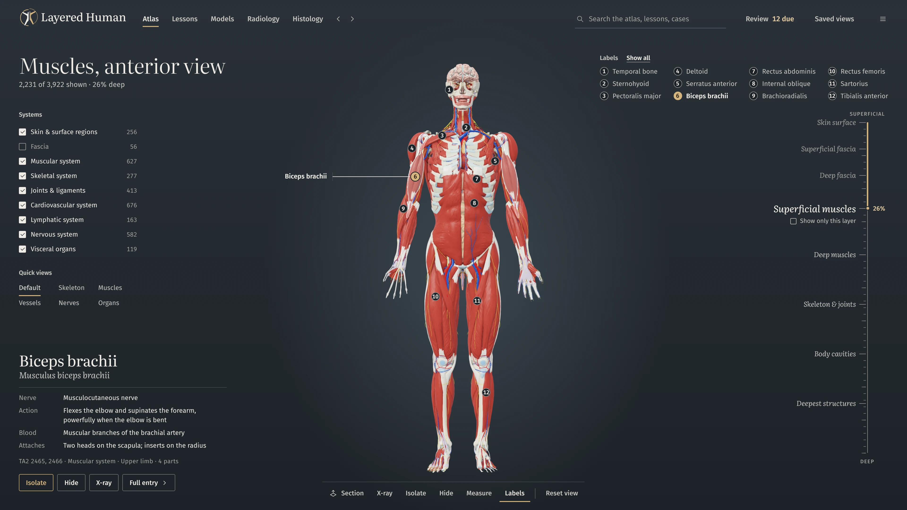</a><figcaption>Atlas, circles and the selected rail</figcaption></figure><figure class="thumb"><a href="renders/checkpoint-3/labels/3_atlas_one.webp">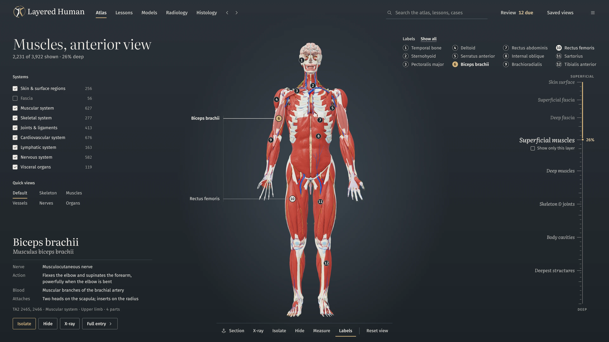</a><figcaption>Atlas, one more rail open</figcaption></figure><figure class="thumb"><a href="renders/checkpoint-3/labels/3_atlas_all.webp">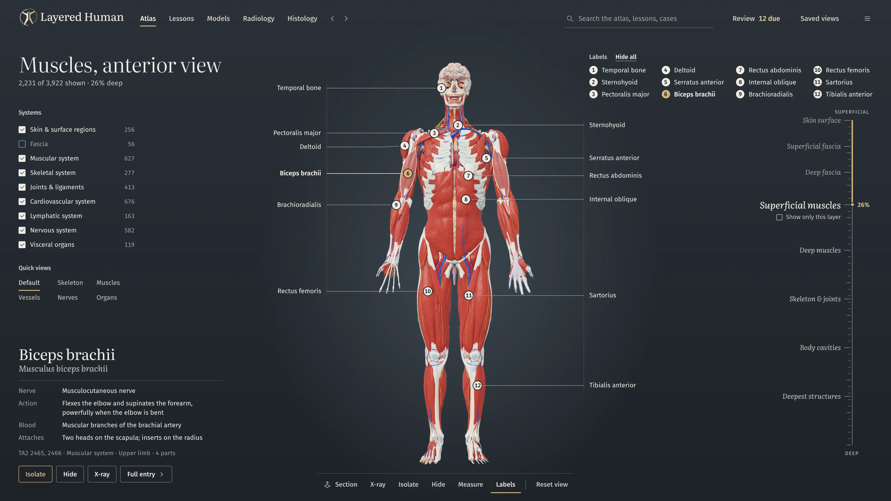</a><figcaption>Atlas, all twelve rails</figcaption></figure></div><div class="grid"><figure class="thumb"><a href="renders/checkpoint-3/labels/3_atlas_one_crop.webp">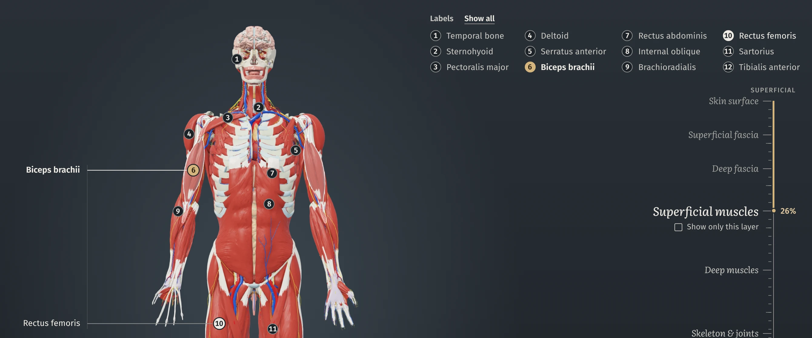</a><figcaption>Two rails, actual size</figcaption></figure><figure class="thumb"><a href="renders/checkpoint-3/labels/3_atlas_all_crop.webp">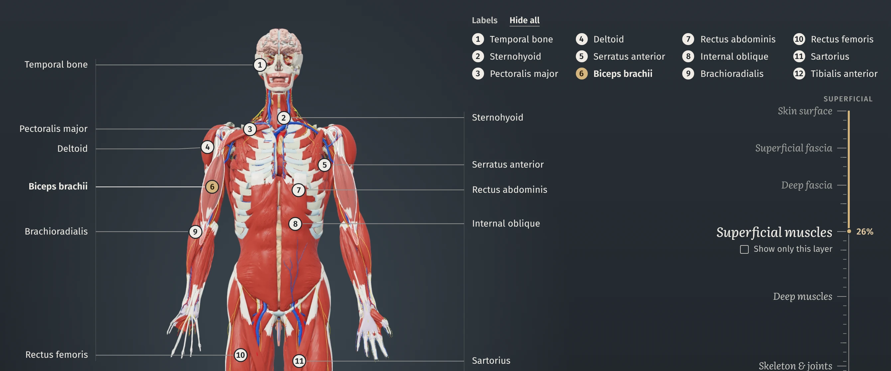</a><figcaption>All twelve, actual size</figcaption></figure><figure class="thumb"><a href="renders/checkpoint-3/labels/3_section_circles.webp">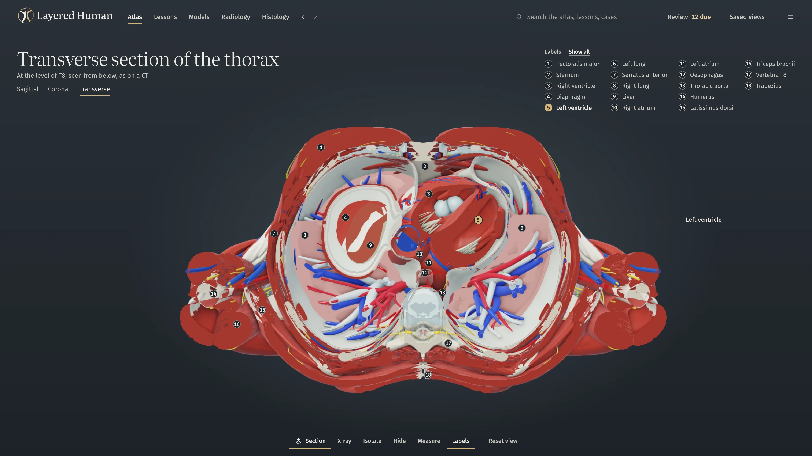</a><figcaption>Section, circles</figcaption></figure><figure class="thumb"><a href="renders/checkpoint-3/labels/3_section_all.webp">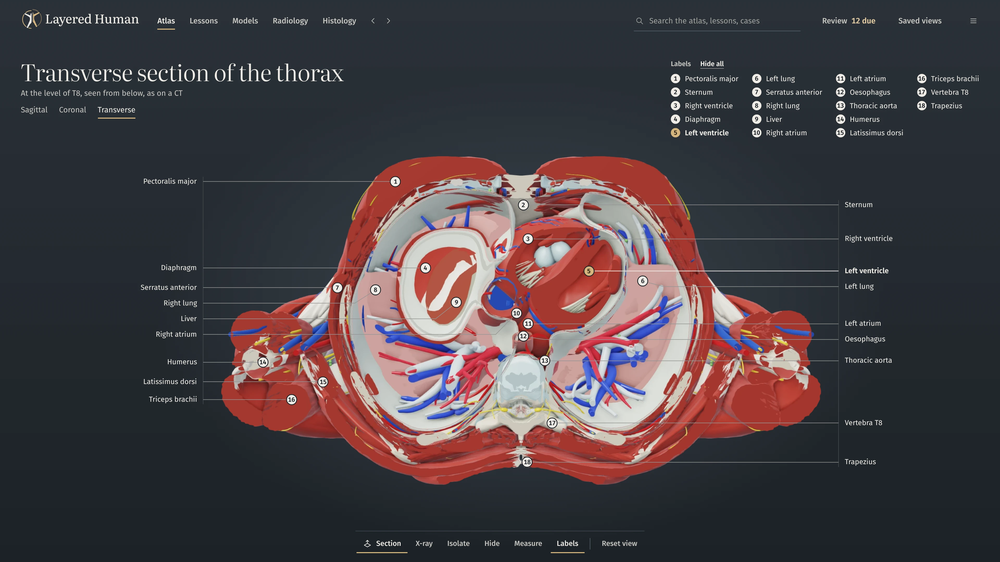</a><figcaption>Section, all eighteen rails</figcaption></figure><figure class="thumb"><a href="renders/checkpoint-3/labels/3_lesson_default.webp"></a><figcaption>Lesson, as it opens</figcaption></figure><figure class="thumb"><a href="renders/checkpoint-3/labels/3_lesson_term.webp"></a><figcaption>Lesson, hovering a term</figcaption></figure><figure class="thumb"><a href="renders/checkpoint-3/labels/3_lesson_all.webp">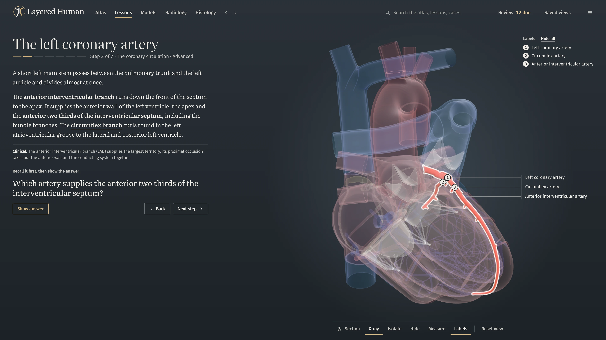</a><figcaption>Lesson, all three rails</figcaption></figure><figure class="thumb"><a href="renders/checkpoint-3/labels/3_atlas_all_umber.webp">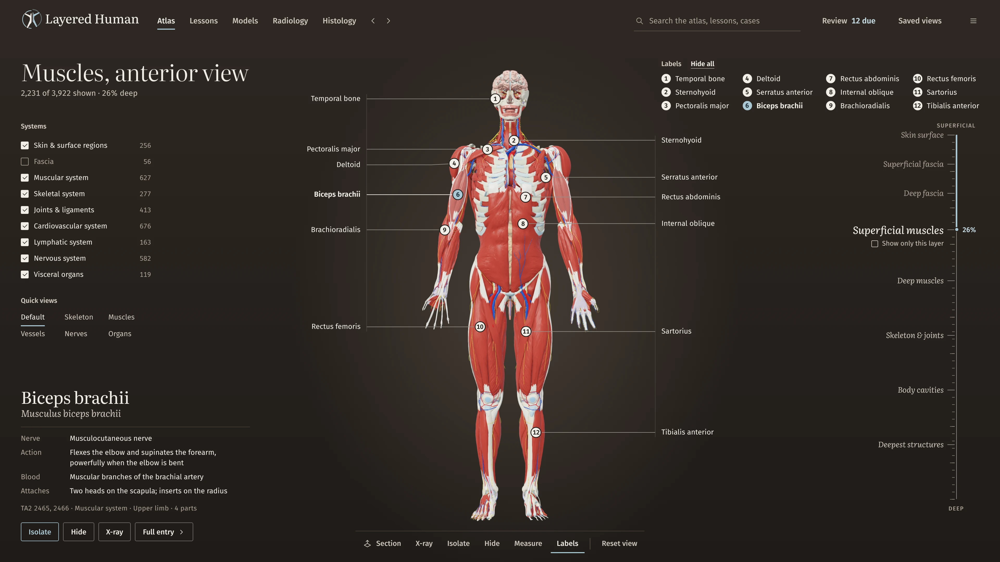</a><figcaption>In Umber</figcaption></figure></div><p><a class="live" href="app/specimen-labels3/index.html?variant=3&amp;screen=atlas">Open it live</a></p></article>
<article class="state" id="practice"><h4>Practice: wrong, wrong, right</h4><p>As you asked: each wrong pick leaves a hollow ring with its number, 1 and then 2, and the right answer gets a filled brass disc with a check. Each marker sits on the structure&rsquo;s own point from the picking data, not where you clicked. In Hunt mode the rings are drawn with no rails and no names, so a wrong pick does not give the answer away; the card says &ldquo;Not that one. 2 tries left.&rdquo;, and the names show only when the question ends.</p><div class="grid"><figure class="thumb"><a href="renders/checkpoint-3/labels/before_practice.webp">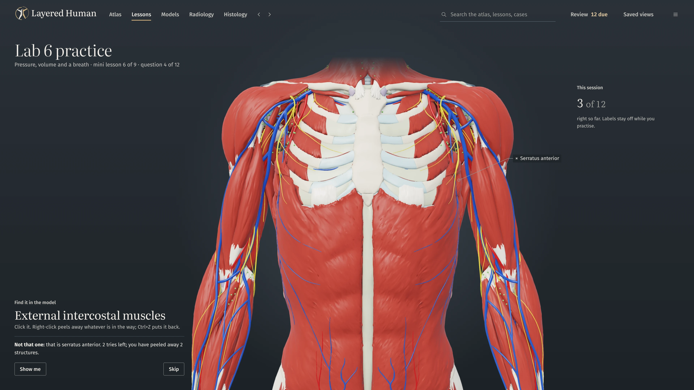</a><figcaption>Before</figcaption></figure><figure class="thumb"><a href="renders/checkpoint-3/labels/practice_wrong1.webp"></a><figcaption>First wrong pick</figcaption></figure><figure class="thumb"><a href="renders/checkpoint-3/labels/practice_wrong2.webp"></a><figcaption>Second wrong pick</figcaption></figure><figure class="thumb"><a href="renders/checkpoint-3/labels/practice_right.webp"></a><figcaption>Right</figcaption></figure><figure class="thumb"><a href="renders/checkpoint-3/labels/practice_wrong2_crop.webp"></a><figcaption>Wrong picks, actual size</figcaption></figure></div></article>
</section>

<section id="search" aria-labelledby="search-h">
  <h2 id="search-h">B. Search</h2>
  <p class="lede">The app&rsquo;s search holds 4,717 entries: 2,422 structures, 563 groups, 766 landmarks, 418 clinical notes, 303 lessons, 104 radiology cases, 100 tissues and 41 models. It matches the whole name first, then the start of the name, then the start of each word, then anywhere, with Latin names counted a little lower: &ldquo;bic&rdquo; finds 72 and &ldquo;biceps&rdquo; 17. It forgives a typo only when nothing else matched, so &ldquo;bycep&rdquo; finds nothing today, and its list says nothing about where a structure is on the body.</p>
  <p class="lede">All three options use the app&rsquo;s own matcher and a slice of its real index. They fold a muscle&rsquo;s parts under it, as a printed index does, show no key hint, and include a proposed one-line change so that &ldquo;bycep&rdquo; finds 19.</p>
<div class="today"><h4>Before this round</h4><div class="grid glance"><figure class="thumb"><a href="renders/checkpoint-3/search/before_atlas.webp"></a><figcaption>The atlas, search closed</figcaption></figure></div></div>
<article class="opt" id="search-1"><h3><span class="num">1</span>On the body <span class="rec">recommended</span></h3><p>As you type, the matching structures get numbered circles on the model, and a short list lettered beside the body names them, with lessons, radiology and clinical notes as quieter lines below.</p><p class="why">My pick. It answers &ldquo;where is it?&rdquo; on the model itself, in the circles you chose for labels. It is weakest when the answer is not on this figure.</p><div class="grid glance"><figure class="thumb"><a href="renders/checkpoint-3/search/1_atlas_rest.webp"></a><figcaption>At rest</figcaption></figure><figure class="thumb"><a href="renders/checkpoint-3/search/1_atlas_open.webp"></a><figcaption>Open, nothing typed</figcaption></figure><figure class="thumb"><a href="renders/checkpoint-3/search/1_atlas_coronary.webp"></a><figcaption>&ldquo;coronary&rdquo;, none in this view</figcaption></figure></div><div class="grid"><figure class="thumb"><a href="renders/checkpoint-3/search/1_atlas_bic.webp"></a><figcaption>&ldquo;bic&rdquo;, 72 results</figcaption></figure><figure class="thumb"><a href="renders/checkpoint-3/search/1_atlas_biceps.webp"></a><figcaption>&ldquo;biceps&rdquo;</figcaption></figure><figure class="thumb"><a href="renders/checkpoint-3/search/1_atlas_bycep.webp"></a><figcaption>&ldquo;bycep&rdquo;, close spellings</figcaption></figure><figure class="thumb"><a href="renders/checkpoint-3/search/1_atlas_latin.webp"></a><figcaption>The Latin &ldquo;musculus deltoideus&rdquo;</figcaption></figure><figure class="thumb"><a href="renders/checkpoint-3/search/1_atlas_none.webp"></a><figcaption>Nothing for &ldquo;wisdom tooth&rdquo;</figcaption></figure><figure class="thumb"><a href="renders/checkpoint-3/search/1_atlas_chosen.webp"></a><figcaption>Biceps brachii chosen</figcaption></figure><figure class="thumb"><a href="renders/checkpoint-3/search/1_coronary_crop.webp"></a><figcaption>&ldquo;coronary&rdquo;, actual size</figcaption></figure><figure class="thumb"><a href="renders/checkpoint-3/search/1_rest_crop.webp"></a><figcaption>The field at rest, actual size</figcaption></figure><figure class="thumb"><a href="renders/checkpoint-3/search/1_atlas_open_umber.webp"></a><figcaption>Open, in Umber</figcaption></figure><figure class="thumb"><a href="renders/checkpoint-3/search/1_atlas_coronary_umber.webp"></a><figcaption>&ldquo;coronary&rdquo;, in Umber</figcaption></figure></div><p><a class="live" href="app/specimen-search/index.html?screen=atlas&amp;variant=1">Open it live</a></p></article>
<article class="opt" id="search-2"><h3><span class="num">2</span>The index</h3><p>Search turns the room into an atlas index lettered on the wall: the body steps back and dims, and the results stand in columns by kind with the matching letters marked.</p><p class="why">The fullest view of everything that matched. It could become option 1&rsquo;s &ldquo;all results&rdquo; page later.</p><div class="grid glance"><figure class="thumb"><a href="renders/checkpoint-3/search/2_atlas_rest.webp"></a><figcaption>At rest</figcaption></figure><figure class="thumb"><a href="renders/checkpoint-3/search/2_atlas_open.webp"></a><figcaption>Open, nothing typed</figcaption></figure><figure class="thumb"><a href="renders/checkpoint-3/search/2_atlas_coronary.webp"></a><figcaption>&ldquo;coronary&rdquo;, none in this view</figcaption></figure></div><div class="grid"><figure class="thumb"><a href="renders/checkpoint-3/search/2_atlas_bic.webp"></a><figcaption>&ldquo;bic&rdquo;, 72 results</figcaption></figure><figure class="thumb"><a href="renders/checkpoint-3/search/2_atlas_biceps.webp"></a><figcaption>&ldquo;biceps&rdquo;</figcaption></figure><figure class="thumb"><a href="renders/checkpoint-3/search/2_atlas_bycep.webp"></a><figcaption>&ldquo;bycep&rdquo;, close spellings</figcaption></figure><figure class="thumb"><a href="renders/checkpoint-3/search/2_atlas_latin.webp"></a><figcaption>The Latin &ldquo;musculus deltoideus&rdquo;</figcaption></figure><figure class="thumb"><a href="renders/checkpoint-3/search/2_atlas_none.webp"></a><figcaption>Nothing for &ldquo;wisdom tooth&rdquo;</figcaption></figure><figure class="thumb"><a href="renders/checkpoint-3/search/2_atlas_chosen.webp"></a><figcaption>Biceps brachii chosen</figcaption></figure><figure class="thumb"><a href="renders/checkpoint-3/search/2_coronary_crop.webp"></a><figcaption>&ldquo;coronary&rdquo;, actual size</figcaption></figure><figure class="thumb"><a href="renders/checkpoint-3/search/2_rest_crop.webp"></a><figcaption>The field at rest, actual size</figcaption></figure><figure class="thumb"><a href="renders/checkpoint-3/search/2_atlas_open_umber.webp"></a><figcaption>Open, in Umber</figcaption></figure><figure class="thumb"><a href="renders/checkpoint-3/search/2_atlas_coronary_umber.webp"></a><figcaption>&ldquo;coronary&rdquo;, in Umber</figcaption></figure></div><p><a class="live" href="app/specimen-search/index.html?screen=atlas&amp;variant=2">Open it live</a></p></article>
<article class="opt" id="search-3"><h3><span class="num">3</span>In the title</h3><p>The room&rsquo;s title is the search: you type into the title, results letter themselves under it, and the one you choose becomes the title.</p><p class="why">The calmest, but while you search, the left column stops showing Systems and the wall label.</p><div class="grid glance"><figure class="thumb"><a href="renders/checkpoint-3/search/3_atlas_rest.webp"></a><figcaption>At rest</figcaption></figure><figure class="thumb"><a href="renders/checkpoint-3/search/3_atlas_open.webp"></a><figcaption>Open, nothing typed</figcaption></figure><figure class="thumb"><a href="renders/checkpoint-3/search/3_atlas_coronary.webp"></a><figcaption>&ldquo;coronary&rdquo;, none in this view</figcaption></figure></div><div class="grid"><figure class="thumb"><a href="renders/checkpoint-3/search/3_atlas_bic.webp"></a><figcaption>&ldquo;bic&rdquo;, 72 results</figcaption></figure><figure class="thumb"><a href="renders/checkpoint-3/search/3_atlas_biceps.webp"></a><figcaption>&ldquo;biceps&rdquo;</figcaption></figure><figure class="thumb"><a href="renders/checkpoint-3/search/3_atlas_bycep.webp"></a><figcaption>&ldquo;bycep&rdquo;, close spellings</figcaption></figure><figure class="thumb"><a href="renders/checkpoint-3/search/3_atlas_latin.webp"></a><figcaption>The Latin &ldquo;musculus deltoideus&rdquo;</figcaption></figure><figure class="thumb"><a href="renders/checkpoint-3/search/3_atlas_none.webp"></a><figcaption>Nothing for &ldquo;wisdom tooth&rdquo;</figcaption></figure><figure class="thumb"><a href="renders/checkpoint-3/search/3_atlas_chosen.webp"></a><figcaption>Biceps brachii chosen</figcaption></figure><figure class="thumb"><a href="renders/checkpoint-3/search/3_coronary_crop.webp"></a><figcaption>&ldquo;coronary&rdquo;, actual size</figcaption></figure><figure class="thumb"><a href="renders/checkpoint-3/search/3_rest_crop.webp"></a><figcaption>The field at rest, actual size</figcaption></figure><figure class="thumb"><a href="renders/checkpoint-3/search/3_atlas_open_umber.webp"></a><figcaption>Open, in Umber</figcaption></figure><figure class="thumb"><a href="renders/checkpoint-3/search/3_atlas_coronary_umber.webp"></a><figcaption>&ldquo;coronary&rdquo;, in Umber</figcaption></figure></div><p><a class="live" href="app/specimen-search/index.html?screen=atlas&amp;variant=3">Open it live</a></p></article>
</section>

<section id="navigation" aria-labelledby="nav-h">
  <h2 id="nav-h">C. Navigation</h2>
  <p class="lede">Today the app has five rooms in its header, a gear that holds Settings and every menu, and a Back that steps through every lesson step and every selection. Practice has no room: the quiz is a floating panel reached from a menu, and &ldquo;Review what is due&rdquo; is a button inside it. In the mockup, the lesson, practice and the model viewer had no visible way back, and a heart quiz had no way in at all.</p>
  <p class="lede">All three options make Practice the sixth room, with the due count on its name, write Settings as a word, add a trail on item pages, and give Back whole places, not steps, with its target named.</p>
<div class="today"><h4>Before this round</h4><div class="grid"><figure class="thumb"><a href="renders/checkpoint-3/nav/before_atlas.webp"></a><figcaption>The atlas</figcaption></figure><figure class="thumb"><a href="renders/checkpoint-3/nav/before_lesson.webp"></a><figcaption>A lesson</figcaption></figure><figure class="thumb"><a href="renders/checkpoint-3/nav/before_viewer.webp"></a><figcaption>The model viewer</figcaption></figure></div></div>
<article class="opt" id="nav-1"><h3><span class="num">1</span>Rooms bar <span class="rec">recommended</span></h3><p>The top bar made fully clear: six rooms, a Back that says where it goes (&ldquo;Back to Lessons&rdquo;), and a trail line under the bar on item pages.</p><p class="why">My pick. It adds what was missing (Practice as a room, a Back that says where it goes, a trail on item pages) without moving the model.</p><div class="grid glance"><figure class="thumb"><a href="renders/checkpoint-3/nav/1_atlas.webp"></a><figcaption>Atlas</figcaption></figure><figure class="thumb"><a href="renders/checkpoint-3/nav/1_lessons.webp"></a><figcaption>Lessons</figcaption></figure></div><div class="grid"><figure class="thumb"><a href="renders/checkpoint-3/nav/1_lesson.webp"></a><figcaption>A lesson, with its trail</figcaption></figure><figure class="thumb"><a href="renders/checkpoint-3/nav/1_lesson_crop.webp"></a><figcaption>Lesson header, actual size</figcaption></figure><figure class="thumb"><a href="renders/checkpoint-3/nav/1_practice.webp"></a><figcaption>Practice, its own room</figcaption></figure><figure class="thumb"><a href="renders/checkpoint-3/nav/1_histology-library.webp"></a><figcaption>Histology library</figcaption></figure><figure class="thumb"><a href="renders/checkpoint-3/nav/1_viewer.webp"></a><figcaption>Model viewer</figcaption></figure><figure class="thumb"><a href="renders/checkpoint-3/nav/1_atlas_1280.webp"></a><figcaption>A 1280 px window</figcaption></figure><figure class="thumb"><a href="renders/checkpoint-3/nav/1_atlas_umber.webp"></a><figcaption>In Umber</figcaption></figure><figure class="thumb"><a href="renders/checkpoint-3/nav/1_atlas_crop.webp"></a><figcaption>Atlas header, actual size</figcaption></figure><figure class="thumb"><a href="renders/checkpoint-3/nav/map_1.webp"></a><figcaption>The map of places</figcaption></figure></div><p><a class="live" href="app/specimen-nav/index.html?variant=1&amp;screen=atlas">Open it live</a></p></article>
<article class="opt" id="nav-2"><h3><span class="num">2</span>Side rail</h3><p>The rooms run down a 104 px rail on the left edge of the wall, each an icon over its name; the header keeps Back, the trail and search.</p><p class="why">Every room always in view, but the rail costs 104 px of width in every room.</p><div class="grid glance"><figure class="thumb"><a href="renders/checkpoint-3/nav/2_atlas.webp"></a><figcaption>Atlas</figcaption></figure><figure class="thumb"><a href="renders/checkpoint-3/nav/2_lessons.webp"></a><figcaption>Lessons</figcaption></figure></div><div class="grid"><figure class="thumb"><a href="renders/checkpoint-3/nav/2_lesson.webp"></a><figcaption>A lesson, with its trail</figcaption></figure><figure class="thumb"><a href="renders/checkpoint-3/nav/2_lesson_crop.webp"></a><figcaption>Lesson header, actual size</figcaption></figure><figure class="thumb"><a href="renders/checkpoint-3/nav/2_practice.webp"></a><figcaption>Practice, its own room</figcaption></figure><figure class="thumb"><a href="renders/checkpoint-3/nav/2_histology-library.webp"></a><figcaption>Histology library</figcaption></figure><figure class="thumb"><a href="renders/checkpoint-3/nav/2_viewer.webp"></a><figcaption>Model viewer</figcaption></figure><figure class="thumb"><a href="renders/checkpoint-3/nav/2_atlas_1280.webp"></a><figcaption>A 1280 px window</figcaption></figure><figure class="thumb"><a href="renders/checkpoint-3/nav/2_atlas_umber.webp"></a><figcaption>In Umber</figcaption></figure><figure class="thumb"><a href="renders/checkpoint-3/nav/2_atlas_crop.webp"></a><figcaption>Atlas header, actual size</figcaption></figure><figure class="thumb"><a href="renders/checkpoint-3/nav/map_2.webp"></a><figcaption>The map of places</figcaption></figure></div><p><a class="live" href="app/specimen-nav/index.html?variant=2&amp;screen=atlas">Open it live</a></p></article>
<article class="opt" id="nav-3"><h3><span class="num">3</span>Lobby</h3><p>A home room the app opens to, with every room a doorway around the lit body, and every room&rsquo;s trail starting at the Lobby.</p><p class="why">The friendliest first launch, but every session starts one click further from the body.</p><div class="grid glance"><figure class="thumb"><a href="renders/checkpoint-3/nav/3_atlas.webp"></a><figcaption>Atlas</figcaption></figure><figure class="thumb"><a href="renders/checkpoint-3/nav/3_lobby.webp"></a><figcaption>The Lobby</figcaption></figure></div><div class="grid"><figure class="thumb"><a href="renders/checkpoint-3/nav/3_lesson.webp"></a><figcaption>A lesson, with its trail</figcaption></figure><figure class="thumb"><a href="renders/checkpoint-3/nav/3_lesson_crop.webp"></a><figcaption>Lesson header, actual size</figcaption></figure><figure class="thumb"><a href="renders/checkpoint-3/nav/3_practice.webp"></a><figcaption>Practice, its own room</figcaption></figure><figure class="thumb"><a href="renders/checkpoint-3/nav/3_histology-library.webp"></a><figcaption>Histology library</figcaption></figure><figure class="thumb"><a href="renders/checkpoint-3/nav/3_viewer.webp"></a><figcaption>Model viewer</figcaption></figure><figure class="thumb"><a href="renders/checkpoint-3/nav/3_atlas_1280.webp"></a><figcaption>A 1280 px window</figcaption></figure><figure class="thumb"><a href="renders/checkpoint-3/nav/3_atlas_umber.webp"></a><figcaption>In Umber</figcaption></figure><figure class="thumb"><a href="renders/checkpoint-3/nav/3_atlas_crop.webp"></a><figcaption>Atlas header, actual size</figcaption></figure><figure class="thumb"><a href="renders/checkpoint-3/nav/map_3.webp"></a><figcaption>The map of places</figcaption></figure></div><p><a class="live" href="app/specimen-nav/index.html?variant=3&amp;screen=lobby">Open it live</a></p></article>
<div class="today"><h4>Twelve tasks: the clicks each takes</h4><p class="quiet">Mouse clicks; typing is not counted. &ldquo;App&rdquo; is today&rsquo;s app, v4.0.8; &ldquo;Before&rdquo; is the mockup before this round.</p><div class="tasks-wrap"><table class="tasks"><thead><tr><th scope="col">#</th><th scope="col">Task</th><th scope="col">App</th><th scope="col">Before</th><th scope="col">1, Rooms bar</th><th scope="col">2, Side rail</th><th scope="col">3, Lobby</th></tr></thead><tbody><tr><td class="n">1</td><td class="t">Look at the biceps from another room</td><td>2</td><td>2</td><td>2</td><td>2</td><td>2</td></tr><tr><td class="n">2</td><td class="t">Continue the last lesson</td><td>1&ndash;2</td><td>2</td><td>1</td><td>1</td><td>1 (Lobby: Continue)</td></tr><tr><td class="n">3</td><td class="t">Review the 12 due</td><td>4 (gear, Study, Quiz, Review)</td><td>1, but where it goes is unclear</td><td>2</td><td>2</td><td>1 from the Lobby, 2 from a room</td></tr><tr><td class="n">4</td><td class="t">Kidney model at its Corpuscle view</td><td>4</td><td>4</td><td>4</td><td>4</td><td>4</td></tr><tr><td class="n">5</td><td class="t">Jejunum slides, then the jejunum model</td><td>7</td><td>4</td><td>4</td><td>4</td><td>4</td></tr><tr><td class="n">6</td><td class="t">Open a chest film</td><td>2</td><td>2</td><td>2</td><td>2</td><td>2</td></tr><tr><td class="n">7</td><td class="t">Change the wall colour</td><td>4 or more</td><td>3 (&equiv;, Settings, wall)</td><td>2</td><td>2</td><td>2</td></tr><tr><td class="n">8</td><td class="t">Back to the atlas as you left it, after reading 3 lesson steps</td><td>4 Backs, or Explore: 1</td><td>1, but nothing says the atlas is kept</td><td>1 (&ldquo;Back to Atlas&rdquo;)</td><td>1</td><td>1</td></tr><tr><td class="n">9</td><td class="t">Start a heart quiz</td><td>6</td><td>no way in</td><td>4 (Practice, Topic, Cardiovascular, Start)</td><td>4</td><td>4</td></tr><tr><td class="n">10</td><td class="t">Save a view, later reopen it</td><td>3 + 2</td><td>3 + 2</td><td>3 + 2</td><td>3 + 2</td><td>3 + 2 (or from the Lobby)</td></tr><tr><td class="n">11</td><td class="t">From the kidney model, the renal artery in the body</td><td>2 (right-click, Show in the atlas)</td><td>no way</td><td>1</td><td>1</td><td>1</td></tr><tr><td class="n">12</td><td class="t">End a lab practice, back to its lesson</td><td>2</td><td>no way drawn</td><td>1 (&ldquo;Back to Lab 6&rdquo;)</td><td>1</td><td>1</td></tr></tbody></table></div></div>
</section>

<section id="histology" aria-labelledby="hist-h">
  <h2 id="hist-h">D. The histology library</h2>
  <p class="lede">You asked for the Catalogue made endless, with no count or text at its foot, and for two other ideas. All three now hold the whole collection, 17 groups and 101 tissues, with 91 real micrographs.</p>
<div class="today"><h4>Before this round</h4><div class="grid glance"><figure class="thumb"><a href="renders/checkpoint-3/histology/before_histology-library.webp"></a><figcaption>The Histology library</figcaption></figure></div></div>
<article class="opt" id="histology-1"><h3><span class="num">1</span>Endless catalogue <span class="rec">recommended</span></h3><p>The catalogue in one real scroll with nothing at its foot: the list fades into the wall, a thin scrollbar is the only sign that it goes on, and the group column follows the scroll.</p><p class="why">My pick. Your idea made real: the whole catalogue in one scroll, nothing written at its foot, and a thin line that shows it goes on.</p><div class="grid glance"><figure class="thumb"><a href="renders/checkpoint-3/histology/1_histology-library.webp"></a><figcaption>At rest</figcaption></figure><figure class="thumb"><a href="renders/checkpoint-3/histology/1_histology-library_scrolled.webp"></a><figcaption>Scrolled</figcaption></figure></div><div class="grid"><figure class="thumb"><a href="renders/checkpoint-3/histology/1_histology-library_chosen.webp"></a><figcaption>A tissue chosen</figcaption></figure><figure class="thumb"><a href="renders/checkpoint-3/histology/1_edge_crop.webp"></a><figcaption>The foot of the list, actual size</figcaption></figure><figure class="thumb"><a href="renders/checkpoint-3/histology/1_histology-library_prussian.webp"></a><figcaption>In Prussian</figcaption></figure></div><h4>The bottom edge, four trials</h4><div class="grid five edges"><figure class="thumb"><a href="renders/checkpoint-3/histology/edge_a.webp"></a><figcaption>a. The window cuts the list: no fade, no scrollbar. At rest it happens to end on a whole row, so it reads as finished.</figcaption></figure><figure class="thumb"><a href="renders/checkpoint-3/histology/edge_b.webp"></a><figcaption>b. The list fades into the wall&rsquo;s own gradient. It reads as going on, but the fade is the only hint that it scrolls.</figcaption></figure><figure class="thumb chosen"><a href="renders/checkpoint-3/histology/edge_c.webp"></a><figcaption>c, chosen. The fade plus a thin scrollbar: no row ever looks cut off, and the line says &ldquo;this scrolls&rdquo; without words.</figcaption></figure><figure class="thumb"><a href="renders/checkpoint-3/histology/edge_d.webp"></a><figcaption>d. The window cut plus the scrollbar. Whether it looks cut off depends on where the rows land.</figcaption></figure></div><p><a class="live" href="app/specimen-histology/index.html?screen=histology-library&amp;variant=1">Open it live</a></p></article>
<article class="opt" id="histology-2"><h3><span class="num">2</span>Body map</h3><p>The body stands on the wall with eight numbered circles on the organs; choosing one opens a caption rail with that system&rsquo;s tissues, and the tissues found throughout the body are listed beside it.</p><p class="why">The most original, but 37 of the 101 tissues have no single place on the body, so it works best as a second way in.</p><div class="grid glance"><figure class="thumb"><a href="renders/checkpoint-3/histology/2_histology-library.webp"></a><figcaption>At rest</figcaption></figure><figure class="thumb"><a href="renders/checkpoint-3/histology/2_histology-library_scrolled.webp"></a><figcaption>Scrolled</figcaption></figure></div><div class="grid"><figure class="thumb"><a href="renders/checkpoint-3/histology/2_histology-library_chosen.webp"></a><figcaption>A tissue chosen</figcaption></figure><figure class="thumb"><a href="renders/checkpoint-3/histology/2_histology-library_crop.webp"></a><figcaption>Circles and rail, actual size</figcaption></figure><figure class="thumb"><a href="renders/checkpoint-3/histology/2_histology-library_prussian.webp"></a><figcaption>In Prussian</figcaption></figure></div><p><a class="live" href="app/specimen-histology/index.html?screen=histology-library&amp;variant=2">Open it live</a></p></article>
<article class="opt" id="histology-3"><h3><span class="num">3</span>Light table</h3><p>The micrographs themselves, six to a row in one sheet per group with the names lettered under them, so a tissue is chosen by how it looks.</p><p class="why">It chooses by look, as a practical exam does. It is picture-first like the vitrines you turned down, though denser.</p><div class="grid glance"><figure class="thumb"><a href="renders/checkpoint-3/histology/3_histology-library.webp"></a><figcaption>At rest</figcaption></figure><figure class="thumb"><a href="renders/checkpoint-3/histology/3_histology-library_scrolled.webp"></a><figcaption>Scrolled</figcaption></figure></div><div class="grid"><figure class="thumb"><a href="renders/checkpoint-3/histology/3_histology-library_chosen.webp"></a><figcaption>A tissue chosen</figcaption></figure><figure class="thumb"><a href="renders/checkpoint-3/histology/3_histology-library_crop.webp"></a><figcaption>The tiles, actual size</figcaption></figure><figure class="thumb"><a href="renders/checkpoint-3/histology/3_histology-library_prussian.webp"></a><figcaption>In Prussian</figcaption></figure></div><p><a class="live" href="app/specimen-histology/index.html?screen=histology-library&amp;variant=3">Open it live</a></p></article>
</section>

<section id="gaps" aria-labelledby="gaps-h">
  <h2 id="gaps-h">What is not finished</h2>
  <p class="lede">So that nothing here looks more finished than it is:</p>
  <ul class="notes">
    <li>Labels: the Qt app paints its labels, so keyboard focus and screen-reader support for the circles would be new work, and each lesson needs a map from its bold terms to their structures.</li>
    <li>Labels: Hunt mode is described, not drawn. In Umber the selected circle and the open circles differ only by hue.</li>
    <li>Search: the mockup has only the biceps figure, points for 16 muscles and 802 of the app&rsquo;s 4,717 entries, so choosing anything else only renames the label.</li>
    <li>Search: option 1 needs an &ldquo;is it in view?&rdquo; check per result that the app does not have, and the &ldquo;bycep&rdquo; fix is a proposed change to the app&rsquo;s matcher.</li>
    <li>Navigation: the Practice room&rsquo;s front page is described, not drawn; the 1280 px pictures scale the full-size room under the new bar; the Back targets and saved views are a made-up session.</li>
    <li>Navigation: the slide&rsquo;s link to its model needs a lookup from tissue to model that the app does not have yet.</li>
    <li>Histology: the body map&rsquo;s eight circles were placed by eye. Ten tissues have no micrograph and show an empty frame, and some micrographs show a pointer or an eyepiece circle.</li>
    <li>Histology: &ldquo;Look for&rdquo; text exists for only two tissues; the data has no field for it or for the stain.</li>
  </ul>
</section>

<footer>Layered Human &middot; design checkpoint 3 &middot; 15 October 2026</footer>
</main>
